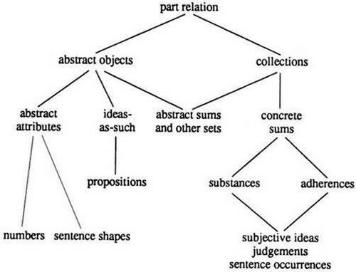

After rejecting opinions which bold that the subject of metaphysics is God, Aristotelian 'separate substances', or Being in the categories, Fonseca says that the first and adequate subject of metaphysics is Being -- in so far as it is common to God and creatures (In libros Metaphysicorum IV c.1 q.1 s.3).
Understood in this way, Being is analogous, although as said of species within one genus or of individuals within one species it is univocal. Between God and creatures, between created substance and accidents, between different classes of accident, and between real Being and Being of reason, Being is analogous by analogies both of proportion and of attribution.
As God is related to his Being, so in proportion a created substance is related to its Being. Likewise, as created substance and its Being are related, so in proportion is an accident related to its Being. Again, as one kind of accident is disposed to its existence so is each other kind of accident to its existence. And as real beings are disposed to their Being, so beings of reason are to theirs (Metaphysicorum IV c.2 q. l s.5, 7). An analogy of attribution obtains among accidents as an analogy of two things to a third (that is, created substance), while between accidents and substance it is analogy of one to the other.
The same is true of beings of reason among themselves and then in comparison with real Being; for beings of reason do not depend less upon real beings than do accidents upon substance. Again, a creature is Being only by attribution or reference to God. Pursuing this, Fonseca distinguishes between formal and objective concepts. A formal concept is an 'actual likeness' (actualis similitudo) of a thing that is understood, produced by the intellect in order to express that thing. An objective concept is that thing is understood in so far as it is conceived through the formai concept. Both the formal and the objective concept of Being are one, but not perfectly so for the reason that they do not prescind perfectly from the concepts of the members which divide Being.
Being as such is transcendent as are also the concepts of thing, something, one, true and good (Metaphysicorum IV c.2 q.2 s.1, 4-5; q.5 s.2).
In God alone there is a perfect identity of essence and existence. In every creature, essence is distinct from existence, but not as one thing from another. Rather, says Fonseca, a created essence is as distinct from its existence as a thing from its ultimate intrinsic mode. In this opinion, he tells us, he is following Alexander of Hales and Duns Scotus ( 12) (Metaphysicorum, IV c.2 q.3 s.4). It is possible that here Fonseca has also to some extent anticipated the Suárezian doctrine of modes.
Excluded from the subject of metaphysics are accidental beings (entia per accidens) and beings of reason. An accidental being, in the sense excluded, is a juxtaposition of two or more beings which lack any (intrinsic) relation to one another (Metaphysicorum IV c.1 q.1 s.3).
Beings of reason are those which exist only inasmuch as they are objects of understanding. Within such beings of reason, as they stand in contrast with mind-independent real beings, Fonseca distinguishes proper Being of reason from one which is fictitious. Properly taken, a being of reason is one whose Being depends upon the understanding in such way that it can still be said of real beings, for example, the concepts of genus, species, and the like. A fictitious being as such is a being whose essence depends upon the understanding in such way that it cannot be said of any real being, for example, a chimera, a goat-stag, or the like (Metaphysicorum IV c.7 q.6 s.5).
The problem that continues to haunt the commentators [of Aristotle] is how to reconcile philosophia prima as universal scientia de ente with philosophia prima as theologia. The latter appears to be a special science rather than a universal one, since it studies one particular being (albeit the highest one), whereas the former studies being qua being. Aristotle had already recognised this problem and had come up with a solution that proved so cryptic that it provoked even more discussion. (26)
In the sixteenth and seventeenth centuries this discussion received an entirely new impulse in Protestant metaphysics. Although the early reformers had a very low opinion of Aristotelian metaphysics, by the end of the sixteenth century their successors had taken to writing textbooks on Aristotle's Metaphysics which copied the model of earlier commentaries. In fact, the Protestant scholasticism that emerged from the middle of the sixteenth century onwards drew heavily on the great Commentaries of the Counter Reformation, notably the ones composed by the Spanish Jesuits.(27) Faced with the institutional problem of how to teach theology and philosophy, the Protestant masters turned back to systematic Aristotelian philosophy of the familiar kind.(28) Moreover theological contorversies within Lutheranism and between Lutheranism and Calvinism "made precise definitions of terms like 'substance' and 'accident, 'nature' and 'person' absolutely imperative. (29)
This fuelled a keen interest in Aristotelian metaphysics. The Protestants were trying to construct a metaphysics conceived as a universal science of Being, a scientia de ente. This meant the removal of all the heterogeneous elements of Aristotelian metaphysics that could only with difficulty be combined with this "pure" science of Being. Hence we find in most Protestant metaphysics a marked tendency to separate natural theology from metaphysics as a science of being qua being. Therefore, by separating true metaphysics as a universal science of Being from natural theology as a scientia particularis, the ubiquitous problem of the subject matter of metaphysics was solved. The first to make this separation in the sixteenth century was actually a Jesuit, Benito Pereira (c 1535-1610). (30) His solution was taken up in various ways by Protestant scholastics, both Calvinist and Lutheran, such as Nicolaus Taurellus (1547-1606), Abraham Calov (1612-1686) and Rudolphus Goclenius the Elder (1547-1628). This tradition was not an isolated German phenomenon but also spread to England. By distinguishing between "first" or "summary philosophy" and natural theology. Francis Bacon clearly draws on this tradition as well.
Goclenius is best described as a protestant Scholastic', his most important contribution to the metaphysics being terminological. He is the first philosopher to use the word ontologia [in Greek] to describe general metaphysics. Strangely enough, this word does not appear in the Isagoge, but rather in the Lexicon . Still, his use of the word precedes that of Calovius by 23 years, and that of Jean-Baptiste Duhamel by 65 [Raul Corazzon pointed out that the term "ontologia" was coined by Jacob Lorhard in 1606].
Although he does not use the term ontologia in the Isagoge, Goclenius does distinguish general metaphysics from special metaphysics in this work and a fortiori stood the concept of general metaphysics. The distinction between general and special metaphysics is not Goclenius's invention, however. The Spanish Jesuit Benito Pereira (c. 1535-1610) had already made it by 1562 (see Rompe Die Trennung von Ontologie und Metaphysik. Der Ablösungsprozess und seine Motivierung bei Benedictus Pererius und anderen Denkern des 16. und 17. Jahrhunderts1968, pp. 7-13) and an earlier manuscript making the distinction has been found (Zimmermann Ontologie oder Metaphysik. Die Diskussion über den Gegenstand der Metaphysik an 13. und 14. Jahrundert 1965, p. 60).
Both Wundt and Vollrath seem to have discovered the distinction between general and special metaphysics only in the Praefatio of Goclenius's Isogoge and have remarked that this distinction does not appear in the main text of the work. This is incorrect, however. The second part of the Isagoge is a series of disputations, the first of which, entitled De ente Communi, ad omnes Categorias conseguente discusses this distinction (Rompe is aware of this and hers is at present the most trustworthy account of Goclenius's work) Goclenius says that some divide first philosophy (prima philosophia), which is usually called 'metaphysics', into two parts. The first is universal and studies the most general notion of Being common to all things (de Ente in communi). The second part is particular and deals with God, divine spirits (daemones), and disembodied intellect (intellectus separatus a corpore, p. 126). Goclenius ascribes this view to Aristotle and then goes on to say that he prefers to divide things up differently. Knowledge (scientia) should be divided into a universal and a particular part, and the universal part should be called 'first philosophy'. The particular part in turn should be divided into a 'transnatural' part which deals with God, and a 'natural' one, which deals with natural entities (pp. 126-7).
Goclenius's idea of knowledge, then, has a particular part which seems to contain every specific science. In contrast, Perera includes only theology, 'spiritology', and psychology, and Christian Wolff only theology, psychology, and cosmology, within special metaphysics. Thus Goclenius is proposing a way of cutting up the sciences such that prima philosophia is truly cast in the role of the queen of the sciences, lording over them all as the scientia universalis. On the face of it, Goclenius's taxonomy of metaphysics is more reasonable than that of Wolff or Pereira. If one is going to take seriously the notion of a 'superscience' which studies the most abstract idea of Being which the objects of all specific sciences share, then one is compelled, I think, to include all of the particular sciences within specific metaphysics. This is true unless, of course, one has platonic misgivings about the possibility of being able to have knowledge about substances which have matter mixed up in them. However, a good Scholastic, wedded as he is to the spirit of Aristotle, has no such misgivings.
Thus the Marburg professor Rudolph Goclenius in the preface to his Isagoge in primam philosophiam (1598), spoke of two separate sciences, a universal science called 'first philosophy' and a particular science called 'metaphysics'. First philosophy deals with Being, its properties and its principles; metaphysics studies the various types of immaterial being: God, the intelligences and the human soul.
Perhaps the most important enterprise of the Doctor Eximius, the Disputationes Metaphysicae is a complete résumé of his own and previous Scholastic thought on a myriad of questions, arranged in the form of fifty-four "Disputations" dealing with various topics systematically.
In format, Suárez's Disputationes represented a radical departure from previous metaphysical treatises. Until its appearance, metaphysics had been explicitly treated either just incidentally in the form of Opuscula ("little works"), such as St. Thomas Aquinas's De ente et essentia ("On Being and Essence"), or in commentaries on the text of Aristotle. Both methods were clearly unsatisfactory, the one incomplete and the other shackled to the rambling obsolete order of Aristotle. So Suárez says that he intends to give, preparatory to theology, a complete exposition of metaphysics which, instead of following the text of Aristotle, will proceed in a systematic fashion.
In executing his intention, the Doctor eximius has divided his work into two main parts, to which correspond two tomes. After explaining in the first Disputation the object, the dignity, and the utility of metaphysics, he proceeds in the first part to treat of Being in general, its properties and causes. In the second tome, he descends to items under Being, considering them from a metaphysical viewpoint.
The first part studies the concept of Being (Disputation 2) which, representing in some way everything that entails an order to existence, transcends all genera, species and differences. It will encompass everything real, from extrinsic denominations, through mere possibles, to the subsistent, purely actual, and necessary reality of God. Following this is a treatment of the essential properties of every being inasmuch as it is a being, namely, unity, truth and goodness. Under the discussion of unity, space is given to questions concerning the principle of individuation (Disputation 5), the reality of universal natures (Disputation 6), and the various kinds of distinction (Disputation 7). The discussion of truth (Disputation 8) is balanced by discussion of falsity (Disputation 9) and that of goodness (Disputation 10) by that of evil (Disputation 11) After the essential properties, there follows a consideration of the causes of Being. Disputation 12 treats causes in general while Disputations 13-25 deal with various types of causes. Concluding this first part, Disputation 26 presents a comparison of causes with their effects and Disputation 27 considers the mutual relations of causes one to another.
The second part opens with the division of Being into infinite and finite (Disputation 28). Infinite Being, or God, is the subject of the next two Disputations. In Disputation 29, the existence and unicity of God is demonstrated metaphysically. Disputation 30 goes on to investigate, as far as unaided human reason can, the divine perfection, simplicity, immensity, immutability, wisdom, and omnipotence. With Disputation 31 Suárez begins his treatment of finite Being. It is this Disputation which is the locus of the famed Suárezian denial of the real distinction between essence and existence in creatures. In Disputation 32, Suárez considers the distinction of substance and accident in general. Substance is treated in metaphysical detail through the next four Disputations while the different categories of accident are the subject matter of Disputations 37 to 53. The fifty-fourth Disputation, ... concludes the whole work with a discussion of "beings of reason" including negations, privations, and reason-dependent relations -- all of which fall outside real Being, the object of metaphysics.
It is generally agreed that modern philosophy places greater stress on the subjectivity of the knower than on the objective reality of the known, as does medieval philosophy. Suárez, when faced with a basic problem of metaphysics, whether the concept of Being is one or multiple, decided, without any Scholastic precedent, to make a subjective state of mind (conceptus formalis entis) the criterion for establishing the unitary sense of objective reality (conceptus obiectivus entis). When problems like that of Being became too difficult to resolve by the usual medieval objective" approach, Suárez recommended recourse to the "subjective" because it was better known (notior) to us than the objective, especially as the subjective is produced "by us and in us" (a nobis et in nobis). On the basis of the principle that "to one formal concept one objective concept necessarily corresponds" uni conceptui formali unus conceptus obiectivus necessario respondet, Suárez, as never before in Scholasticism, made extra-mental reality dependent for its truth on in intra-mental concept, thus changing the main thrust of medieval philosophy. Descartes adopted the same approach when faced with he basic problem of his system, of establishing, through the resources of the intellect, knowledge that was objectively certain. Like Suárez, he made an intra-mental concept the criterion for determining extra- mental reality. The intra-mental concept was the thinker's "cogito"; the extra-mental reality was the thinker's existence, "sum"; with the certainty of the existence following as a necessary consequence, "ergo", from the intra-mental concept itself.
Suárez could not have become the founder of modern philosophy before he had worked out his own system, the technical vocabulary of which provided the groundwork for the emerging modern systems. This vocabulary was first needed to systematize metaphysics. The long subjection to the unmethodical text of Aristotle had delayed the attainment of this important philosophical object, realised at last in the Disputationes Metaphysicae.
In the two volumes of that great work, the philosophy of Being was given a binary structure, characterized, though not by its author, as general (vol. 1) and special (vol. 2) metaphysics. General metaphysics has as its theme the common concept of Being, its general attributes, and its causes; and special metaphysics, the kinds of Being contained under the common concept, (*) classified in two dichotomies, the primary of finite and infinite, and the secondary of substance and accident. Suárez also furnished the burgeoning modern systems with vocabulary as groundwork for their ideas, in many cases the vocabulary anomalously grew to be alien to the system that was its source. How was this possible? Through that system undergoing anamorphosis, a condition where something distorted occasionally appears to be regular; indeed so regular, that the distorted ideas seem to belong to the nature of anamorphosed thing itself. Which may explain why the realist Suárez is made out to be a crypto-idealist, and it may be that the philosophies of realism (Scholasticism) and idealism (modern philosophies) have some hidden affinity and are closer together than one would suppose.
The two large folio volumes of the Disputationes metaphysicae appeared in Salamanca in 1597. In his brief foreword, "Ad lectorem," Suárez indicates his reason for undertaking this project: It is impossible for anyone to become a competent theologian unless he builds upon a solid metaphysical foundation. He develops this view in the Prooemium or prologue to his work. The science of metaphysics, he holds, is indispensable for a mastery of theology. More intimately than any other human field of knowledge, it is connected with theology; it has for its object the most universal and supreme principles which embrace all Being and are the foundation of all knowledge. This function of metaphysics was for Suárez a compelling motive for interrupting his theological labors and producing, in one systematic, comprehensive work, the results of his metaphysical studies and investigations, begun many years before. The prologue reads as follows :
Sacred and supernatural theology relies on divine illumination and on principles revealed by God. However, it is cultivated by human reasoning and investigation, and therefore enlists the aid of truths naturally known, using them as ministers and instruments to develop its deductions and to illustrate divine truths. But of all the natural sciences, that which holds the primacy and has won the name of first philosophy is most valuable for promoting sacred and supernatural theology. For among them all it approaches most closely to the science of divine things, and also explains and vindicates those natural principles which embrace the universe of Being and in one way or another stand at the basis of all learning.
For this reason I wished to revise and expand what I have worked out for my students and publicly taught on various occasions during many years concerning this natural wisdom, so that the results of my reflections might be made available to the general public. Accordingly I am forced for a time to interrupt, or rather to postpone, the more weighty commentaries and disputations on sacred theology I am so busily engaged in, as well as the taxing labor required for their publication.
It often happened that while I was treating of divine mysteries, metaphysical problems would come up. Without a knowledge and understanding of these, the higher mysteries of Christianity can scarcely, if at all, be discussed as they deserve. Hence I had to mingle baser questions with supernatural subjects, a practice that is annoying to readers and is not very profitable for them; or else, to avoid this awkward procedure, I had briefly to propose my own opinion in such matters, and its demand of toy readers a blind faith in my judgment. This was embarrassing for me, and could well seem out of place to them. Metaphysical principles and truths are so closely interwoven with theological conclusions and deductions, that if knowledge and full understanding of the former are lacking, knowledge of the latter must necessarily suffer.
Led on by such considerations, I yielded to repeated requests and decided to write the present work. I have arranged all the metaphysical disputations according to a method calculated to combine comprehensive treatment with brevity, and so to be of greater service to revealed wisdom. Hence it will not be necessary to divide the work into several books. For all that pertains to this doctrine and is suitable to its subject matter in the light of the method adopted, can be fully handled in a limited number of disputations. What belongs to "pure philosophy" or dialectics has, so far as possible, been left out as not in keeping with the scope of the work. I shall adhere to this norm, even though I am aware that other writers on metaphysics devote much space to such subjects. But before I begin to treat of the subject-matter of this doctrine I shall, God willing, discuss wisdom or metaphysics itself, its object, use, necessity and its attributes and rewards.
The work falls into two main parts, coinciding with the two volumes in which it was published. It comprises fifty-four disputations in all. The first volume treats of metaphysics in its broadest comprehension: Being as such, and the properties and causes of Being. The first disputation deals with the object of metaphysics; the second inaugurates an exposition of the concept of Being. Disputations III to XI discuss the passions and transcendental properties of Being. Disputations XII to XXVII embody the author's doctrine on causes.
The second volume opens with a consideration of infinite and finite Being. Two disputations deal with natural knowledge of the existence, nature, and attributes of God. The remaining disputations are devoted to the metaphysics of finite Being, distributed according to the Aristotelian categories.
As the title indicates, the work is cast in the form of disputations. The discussions follow a regular pattern. First, the problem is stated. Then the various solutions that have actually been proposed by philosophers are reviewed (Variae opiniones). Thirdly, Suárez gives what he considers to be the true doctrine or, as the case may be, the most probable theory (Vera sententia or Resolutio quaestionis). A refutation of opposing views often brings the disputation to a close." pp. 6-7
In the twenty-seven Disputations which make up the first volume, Suárez is concerned with Being in general while, symmetrically, in the twenty-seven Disputations of the second volume he descends to particular Being -- in effect dividing metaphysics itself into a general and a special part.
In the very first Disputation (Opera omnia, Paris: Vivès [1856]: vol. 25, pp. 1-64), he tells us that the object of metaphysics is "Being insofar as it is real Being". Explaining this, in Disputation 2 (pp. 64-102) he uses two distinctions already familiar to Scholastic authors. The first is between the formal concept as an act of the mind and the objective concept as what is immediately the object of that act. This latter may be an individual thing or some common feature (ratio) of things. It may, further, be something mind-independent, whether actual or possible, or it may be something merely objective or mind-dependent. The second distinction is between Being as a participle, which refers to actual existents and "being" as a noun, which refers to whatever is not a simple fiction but is true in itself and apt really to exist. The object of metaphysics is then identified with the "common objective concept of being as a noun." This precise object, which reflects Avicenna's (980-1037) understanding of Aristotelian metaphysics, abstracts from existence and, as common, transcends all categories, genera, species and differences to embrace everything real. This last runs a range from extrinsic denominations (such as "being right," "being left," "being known," or "being willed"), 9 through mere possibles (which reduce to non-contradiction), to actual created substances and accidents, to the subsistent, purely actual, necessary, untreated, and infinite reality of God. Over this range, the common concept of being as a noun is analogous with what Suárez will call "an analogy of intrinsic attribution." In this analogy, a unified concept of being is shared, in an order that is intrinsic to it, by different beings (God and creatures, substance and accidents) in such way that the being of what is posterior depends upon and indeed "demands" (postulat) the being of what is prior.
Disputation 3 (pp. 102-115) offers a general treatment of the transcendental properties, namely unity, truth, and goodness, which belong to every being insofar as it is a being. " pp. XI-XII (notes omitted)
To what extent Suárez, despite his token references to Thomas Aquinas, follows Scotus' approach is evident from the definition of the subject matter of metaphysics in the first of the 54 disputations. Here he discusses six possible solutions to the problem, but dismisses all of them as either too comprehensive or too restrictive. The subject matter of metaphysics is neither everything that is knowable nor the "supreme real being" (Suárez, Disp. Met. 1.1.9), i.e. God or the immaterial being; nor is it the finite being that is the subject matter of physics. Rather, the subject matter of metaphysics is "being as such" (ens inquantum ens), i.e. a common determination (ibid. 1.1.23 and 26) that is grasped in a concept that abstracts from all categorial determinations as well as from being finite/infinite, being caused/uncaused, and being material/immaterial. Metaphysics is, therefore, the "most general science" (ibid. 1.5.14), because it treats of the "rationes universales transcendentales" (ibid. 1.2.27). That is to say, metaphysics is a scientia transcendens in the Scotistic sense. Because the immaterial being (God) cannot be known except through previously known transcategorial attributes of Being, metaphysics as transcendental science and metaphysics as theology coincide.
According to Suárez, metaphysics deals with the "formal" as well as the "objective" concept of Being. By the formal concept of Being, Suárez understands the act of knowing, which "ex unica et prima impositione" (ibid. 2.2.24) yields an intentional representation of the object; by the objective concept he designates that which is intentionally represented by that act. In other words, Suárez does not assume a theory of concepts characterized by a noetic-noematic parallelism of res and conceptus; rather he accepts Ockham's critical approach towards a strictly realistic interpretation of universal concepts. Since Scotus himself does not rely on that parallelism when it comes to the concept of Being, Suárez can substantially follow Scotus and apply Being to a first and unified formal concept which, in virtue of its imposition, represents a first and unified objective concept of absolutely simple content that grasps all different beings in an indeterminate way, i.e. as Being.
To the formal concept of Being there corresponds an appropriate and immediate objective concept, which is explicitly neither substance nor accident, neither God nor creature, but which designates these in a unified way, i.e. inasmuch as they are similar and agree in Being. (ibid. 2.2.8)
What does the objective concept that corresponds to the formal concept of Being mean? According to Suárez, it is a determination that transcends the generality of the genus; this determination cannot be defined, but only explicated through its relationship to actual existence. Being means "that which can exist" (id quod aptum est esse seu realiter existere: ibid. 2.4.7); the possibility of existence is grounded in an ontological disposition which (as we have seen before) appears in the non-contradiction of the internal contents constituting essences.
Because entity in the sense of being(ness) -- which in a concrete being is identical with the entity or being(ness) of that being -- is grasped indeterminately by the concept of Being, that concept has an "illimitability and transcendence" (ibid.2.6.10) on account of which it precedes all more determinate modes. First among those more determinate modes, according to both Suárez and Scotus, is the classification "finite/infinite", which Suárez understands in terms of "intensity"; this allows him to interpret finite Being as a non-determinate mode of an intensive quantity and infinite Being as the "totally indivisible infinity of perfection which in itself is most real and complete" (ibid. 30.2.25)." pp. 62-63.
As every historian of philosophy knows, Aristotle thought the subject of metaphysics was "Being insofar as it is Being" and from this subject he excluded "being as true". Centuries after Aristotle, Francisco Suárez, S.J., designated the subject of metaphysics more explicitly as "Being insofar as it is real Being".
The addition of "real" to Aristotle's formula highlighted the inclusion of all that can as well as does exist (4). Against the backdrop of two already well known distinctions - (1) between formal and objective concepts, and (2) between being as a participle and being as a noun -- for Suárez the subject so conceived was identical with "the objective concept of being as a noun" (5). Concurrently, while being was said to be analogous with regard to hierarchically ordered objects (God and creatures, substance and accidents) with an intrinsic attribution of the perfection it represented (6), such analogy presupposed a common, unitary, and all but univocal, concept (7). But from that concept and from the subject of metaphysics Suárez excluded "beings of reason" (8), which he subsumed under Aristotle's Being as true (9), and of which impossible objects, in the sense of those that would be self-contradictory, furnished the paradigm case. (10) pp. 297-298
Heidegger reserves the place of honor in his exposition [Of the Thesis of Medieval Ontology] for the Spanish Jesuit Francisco Suárez (1548-1617), a figure whose pre-eminence for Heidegger is both systematic and historical. Suárez is the bridge between the Middle Ages and the modern world (Grundprobleme der Phänomenologie 111-16/ English translation 79-83). It was through Suárez that the metaphysics of Scholasticism flowed into modern thinkers; his influence is clearly detectable in Descartes, Leibniz, Wolff, Schopenhauer, Kant, and Hegel. Suárez abandoned the format of the commentarium employed by the classical Scholastic thinkers and developed instead a strictly philosophical and systematic treatise entitled Disputationes Metaphysicae. Although it was written in the seventeenth century, it is the first major systematic Scholastic treatise on metaphysics (GP 112/80). St. Thomas' major works, for example, are either commentaries or, when they are systematic, theological treatises. The Disputationes is divided into fifty-four tracts. The first twenty-seven treat of metaphysica generalis (or ontologia); the next twenty-six treat of special beings (metaphysica specialis); the fifty-fourth is devoted to beings of reason (entia rationis). In general metaphysics, Suárez investigates the properties of the abstract concept of being in general. In special metaphysics, he investigates God and creatures, that is, infinite and finite beings. This distinction between general and special metaphysics was imported fully intact by Wolff and made its way to the center of Kant's architectonic -- to the distinction between the transcendental analytic and the transcendental dialectic -- in the Critique of Pure Reason.
The first Disputatio treats: De natura primae philosophiae seu metaphysicae, of the essence of First Philosophy or metaphysics. Suárez begins in the introduction (3) by discussing the various designations of metaphysics (varia metaphysicae nomina), and does so with independent recourse to Aristotle. Here he finds that metaphysics is designated as sapientia (sophia), prudentia (phronesis), then as prima philosophia (proté philosophia), then as naturalis theologia (theologiké) -- which Suárez here interprets in a sense quite unlike that of antiquity (quoniam de Deo ac divinis rebus sermonem habet, quantum ex naturali lumine haberi potest 4) – and finally as metaphysica.
Suárez says that this natural theology or First Philosophy is called metaphysics because it deals with God (ex quo etiam metaphysica nominata est 5). He thereby gives the expression a different meaning from that of Aquinas. Aquinas uses the expression metaphysica insofar as it treats de ente in communi. Suárez, on the other hand, says it is called metaphysics because it is theology. He remarks that this title 'metaphysics' does not stem from Aristotle himself, but from his interpreters (quod nomen non tam ab Aristotele, quam ab ejus interpretibus habuit 6). However, he is of the opinion that Aristotle did put together this collection.
He explains the expression 'metaphysics' in a sense that deviates from the explanation given by Aquinas, and brings in another point of view which is significant in the history of metaphysics: de his rebus, quae scientias seu res naturales consequuntur. (7)
The Metaphysics is not concerned, then, with such books as come after those about physics, rather 'coming after' is now taken in the sense of content: knowledge of the suprasensuous is later than that of the sensuous. In the order of appropriation, in the order in which knowledge of the suprasensuous arises, in the sequence of investigation, metaphysical knowledge is placed after knowledge of physics. Suárez stresses the méta in the sense of post and understands this post in the sense of the stages of knowledge proceeding from the sensuous to the suprasensuous. At the same time however he brings into play the interpretation in terms of content: méta, afterwards, that which comes afterwards, which exceeds the sensuous.
Suárez is the thinker who had the strongest influence on modem philosophy. Descartes is directly dependent on him, using his terminology almost everywhere. It is Suárez who for the first time systematized medieval philosophy and above all ontology. Before him the Middle Ages, including Thomas and Duns Scotus, treated ancient thought only in commentaries, which deal with the texts seriatim. The basic book of antiquity, Aristotle's Metaphysics, is not a coherent work, being without a systematic structure. Suárez saw this and tried to make up for this lack, as he regarded it, by putting the ontological problems into a systematic form for the first time, a form which determined a classification of metaphysics that lasted through the subsequent centuries down to Hegel.
In accordance with Suárez' scheme, distinctions were drawn between metaphysica generalis, general ontology, and metaphysica specialis, which included cosmologia rationalis, ontology of nature, psychologia, ontology of mind, and theologia rationalis, ontology of God. This arrangement of the central philosophical disciplines recurs in Kant's Critique of Pure Reason. Transcendental logic corresponds in its foundations to general ontology. What Kant deals with in transcendental dialectic, the problems of rational psychology, cosmology, and theology, corresponds to what modern philosophy recognized as questions. Suárez, who gave an exposition of his philosophy in the Disputationes Metaphysicae (1597), not only exercised great influence on the further development of theology within Catholicism but, with his order colleague Fonseca, had a powerful effect on the shaping of Protestant Scholasticism in the sixteenth and seventeenth centuries. Their thoroughness and philosophical level are higher by far than that which Melanchthon, for example, attained in his commentaries on Aristotle.
Within three of his writings, Timpler notes that the study and knowledge of metaphysics is required for the study and knowledge of all other philosophical disciplines. For this reason, Timpler's Metaphysics textbook merits examination here prior to consideration of his other philosophical writings. The basic components of Timpler's Metaphysics textbook can be outlined as follows:
Timpler considers the subject matter of metaphysics to be everything which is intelligible to human beings; therefore, All that is Intelligible (omne intelligibile) is the all-inclusive category within which all component parts of Timpler's metaphysics are subsumed. Timpler divides the category All that is Intelligible into Something (aliquid) and Nothing (nihil). Each individual intelligible falls within one and only one of these two categories.
Timpler asserts that Nothing cannot be perfectly defined. His brief remarks concerning Nothing shall be presented within chapter 15 section 17 and within chapter 20 section 9. Timpler's "Something" (aliquid) is equivalent to "Being" (esse; est) in the broadest sense of the latter. Timpler's Being can be explained with the use of the following table:
Being (understood in its broadest sense) includes A and C yet excludes B.
The broadest and most basic distinction made within Timpler's Metaphysics textbook, therefore, is the distinction made between something (i.e., "Being" understood in its broadest sense) and Nothing (i.e., Non-Being). There is no medium between Something and Nothing; any given intelligible object falls into one and only one of these two categories. According to Timpler, these two categories are contradictorily opposed to one another. The principle which states this contradictory opposition--i.e., which states that it is absolutely impossible for an intelligible subject matter to be both Being and Non-Being simultaneously -- is the principle of contradiction; Timpler regards this principle to be indemonstrable and absolutely necessary. The principle of contradiction is the most important rule contained within Timpler's Metaphysics textbook; in so far as it comprises All that is Intelligible, it regulates the entire subject matter of that textbook.
Timpler also notes that the principle of contradiction is "that primary complex principle which is basic to all of the arts" (i.e., to both the liberal arts and the illiberal arts).
It must be emphasized that All that is Intelligible and the Principle of Contradiction (all sub-categories of the former are regulated by means of the latter) are the broadest, most general categories not only of Timpler's Metaphysics textbook, but of all of his other writings as well. These two categories embrace the entirety of Timpler's thought as expressed within his various philosophical writings. The study of metaphysics is basic to the study of all other disciplines partly due to the fact that it directly deals with these two general categories which are basic to every other discipline.
His most interesting metaphysical works are the Metaphysica divina pars generalis and the Metaphysica divina pars specialis. Calovius's logical / epistemological works, the Gnostologia and Noologia, may be of some interest, although as logic the works are weakened by the psychologism which is often found in logic texts of that period and school.
Calovius is a good example of the typical Protestant metaphysician of the 17th century. According to Calovius, one's metaphysical studies should be guided by the truths of revealed faith, in this case orthodox Lutheranism. Without the guidance of the celestial light, all our travels into scholarly study are nothing more than pitiable wandering. But we cannot follow this celestial light unless we pay attention to both Scripture and nature. Calovius reveals himself to be a true scholastic by naming Aristotle the foremost philosopher. Thus, the main task of Calovius's work is to reconcile the revealed truths of orthodox Lutheranism with the principles of Aristotle's metaphysics. That one is so enabled to refute the errors of agnostic natural scientists, Socinians (a favourite target of Protestant attacks, this Protestant sect denied the doctrine of the Trinity and the divinity of Christ), Jesuits, Calvinists, and other heretics, so much the better. Still, both sources of knowledge are required: without Aristotelian natural science, there will be factual errors; without Scripture, heresy. (Hinc tot errores, tot haereses.)
Metaphysics, according to Calovius, is the wisdom of being qua being (sapientia Entis qua Entis). This definition should be understood as denoting one discipline, which is also called 'ontology' or 'transcendental wisdom' (ontologia [in Greek] sive transcendentalis Sapientia ). The usual and improper sense of 'metaphysics' adopted by the Jesuit Benito Pereira (c. 1535-1610) according to whom metaphysics is concerned with disembodied spirit, is rejected. Indeed, he says, they hallucinate who make the object of metaphysics either God or immaterial substance, and they plainly do not understand the nature of wisdom.
Thus, Calovius believes that the mistake of people like Pereira was to fail to acknowledge a notion of Being which is general enough to be common both to spiritual and material beings. This, of course, may not be entirely fair to Pereira and other Thomists, since theological discomfiture may arise from claiming that God and creatures are subsumed under a general concept of Being. Does this most general of concepts logically or ontologically precede God? Or is the dignity of God affected by sharing the notion of Being with beings like you and me?
Metaphysics, finally, must deal with what really is, not merely what could be. Calovius claims that truly and properly, metaphysics concerns itself with non-complex, essential, positive, real, actual Being (Ens incomplexum, per se, positivum, reale et actuale).
Only in an attenuated sense does it contain complex, accidental, deprived beings, beings of reason, and potential beings (Entia complexa, per accidens, privationes, Entia rationes et in potentia). Calovius prefers to limit metaphysics to the former, and we might not incorrectly cali him an 'actualist'. Atfer all, Calovius wonders, how does one abstract notion of Being common to actual and potential Being, if potential Being is not truly Being?"
Let us open Wolff's Ontology and read his Preface: "Prime Philosophy (namely, metaphysics) was first laden by the Scholastics with enviable praise, but, ever after the success of Cartesian philosophy, it fell into disrepute and has become a laughing stock to all." (10) What Wolff clearly sees then is that, since the time when Descartes "grew weary of metaphysics," there still may have been metaphysicians, but there has been no metaphysics. As a distinct science, metaphysics has simply ceased to be. And Kant himself was only echoing Wolff when he wrote in his Preface to the first edition of the Critique of Pure Reason: There was a time when metaphysics used to be called the queen of sciences ... Now, in our own century, it is quite fashionable to show contempt for it." Our own century here is the eighteenth century, which was the century of both Wolff and Kant.
When he made up his mind to put a stop to that technical decadence in the field of philosophy, Wolff was keenly conscious of carrying on the work of the great Scholastics. What they had done was not perfect, but that was the thing to do, and, since it could be done better, Wolff himself was going to do it all over again. Let us be as precise as possible. Wolff did not wish to be reproached with bringing back a Scholastic philosophy that was dead. In point of fact, that was not what he wanted to do. But he was claiming the right to retain at least Scholastic terminology, for all there was to be done about it was, keeping the same terms, to build up better definitions and more exactly determined propositions. (11)
This is what Wolff set about doing first with the term Being, and it is typical of his attitude that he can reach it only through the notion of possibility. "Being," Wolff says, "is what can exist and, consequently, that with which existence is not incompatible: Ens dicitur quod existere potest, consequenter cui existentia non repugnat. (12) In other words, what is possible is a being: Quod possible est, ens est. (13) Besides, Wolff adds, this is a metaphysical notion which is accepted by all, and which exactly tallies with common language. Being, "something", "possible;" here are so many words that are practically synonymous, and metaphysics does nothing more than bring their implicit meanings out in the open. True enough, what is commonly called "a being" is something that exists, but he who understands that a A is being because it exists will as easily understand that, if A exists, it is because it can exist.(14) Possibility then is the very root of existence, and this is why the possibles are commonly called beings. The proof of it is that we commonly speak of beings past or future, that is, of beings that no longer exist or that do not yet exist. In any case, their Being has nothing to do with actual existence; it is, though a merely possible being, yet a being.
In order to probe more deeply into the knowledge of Being, what we have to do is to inquire into the causes of its possibility. The first one is, of course, the one we have already mentioned, namely, the absence of inner contradiction; but this is not enough. In order to posit a being, one must ascribe to its notion such constituent parts as are not only compatible among themselves, but are its primary constituent parts. The primary constituents of a being are those which are neither determined by some element foreign to that being, nor determined by any one of the other constituent elements of the same being. If an element supposedly foreign to some being were determining with respect to any one of those elements which enter its constitution, then it would not be foreign to it; it would be one of its constituent elements. On the other hand, if some of the constituent elements of a being determine each other, then we must retain only the determining elements as constituent parts of that being.(15) In short, every being is made up of such elements as are both compatible and prime. Such elements shall be called the "essentials" of Being (em>essentialia), because they constitute the very essence. Hence this conclusion, whose full significance it is superfluous to stress: Essence is what is conceived of Being in the first place and, without it, being cannot be.(16) Thus, the essence of the equilateral triangle is made up of the number three and of the equality of its sides; again, the essence of virtue is made up of a habit (habitus) of the will and of the conformity with natural law of the acts which follow from that habit. Let any one of those conditions be altered, there is left neither equilateral triangle nor virtue; let them be all posited, then there is equilateral triangle and virtue. The presence of the "essentials" of the thing is therefore both necessary and sufficient to define its essence. Those "essentials" always entail certain properties which are inseparable from them and, since a thing never is without its "essentials," it is also inseparable from the thing. Such properties are called the "attributes" of Being. As to its "modes," they are such ulterior determinations which are neither determined by the essence nor contradictory with it. The attributes of a being are always given with it, but not its modes, which are what the Scholastics used to call "accidents".
In a being so conceived, the "essentials" obviously are the very core of reality. Taken as non-contradictory, they ensure the possibility of Being. It is through its "essentials" that a being is Per essentialia ens possibile est. Now, since the essence of Being is one with its possibility, he who acknowledges the intrinsic possibility of a thing knows also its essence. We are saying "acknowledges," and rightly so, for it is possible to account for the attributes of Being from the "essentials" of that being, but there is no accounting for the fact that those "essentials" belong to it. Since they are prime, there is nothing above them from which they could be deduced. As to the modes, they cannot be deduced from their essence either. For, what makes up an essence accounts for the fact that such and such a mode may belong to a certain being; it does not account for the fact that such a mode actually does belong to it. The reason for the actual presence of modes in a given being must always be looked for outside that being. We call "external" those beings which constitute the sufficient reason for the actual presence, in a given being, of modes which cannot be sufficiently accounted for by its essence alone. The essence then is for any being the sufficient reason for the actual presence of its attributes and of the possible presence of its modes(17) Hence its nominal definition: "Essence is that which is conceived of a being in the first place, and in which is to be found the sufficient reason why all the rest either actually belongs to it or else may belong to it: Essentia definiri potest per id quod primum de ente concipitur et in quo ratio continetur sufficiens, cur caetera vel actu insint, vel finesse possint." (18)
The scrupulously exacting method which Wolff was using in his determination of Being was entirely his own, but the results achieved by that method had really nothing new. And Wolff himself was clearly aware of it.
In Christian Wolff we have a Leibniz purged of poetry, but also purged of some exaggerated conceptions, for example, the drowsy or slumbering monads, and the phenomenal character of space. All is built into an immense, systematic exposition, magnificent in its formal rigour and clarity, and building on, though also improving, the ontological, cosmological, and theological doctrines of the Aristotelian schoolmen and, in particular, of Suárez. (The improvements are possibly due to Platonizing influences, which modified the ingrained love of the individual instance so characteristic of the Aristotelians.) Christian Wolff expounded his systematization both in a German version (the Logic, Metaphysics, Ethics, Politics, Natural Theology, etc.), and also in a Latin version (a Logic (1728), an Ontology (1730), a Cosmology (1731), a Psychology (1732 and 1734), a Natural Theology (1736-7), and a Universal Practical Philosophy (1738-9)). There are also many political writings of interest. To this vast system, with its innumerable Epigonoi -- Bilfinger, Meier, Rüdiger, Baumgarten, Tetens, Crusius, and so on -- Kant made his great emendations, which have been exaggerated into the idealisms, and later the positivisms, by which the thought and even the public policy of Europe has been bemused. What is, however, amazing is the immense volume and solid merit of Wolff's works, and the almost total misunderstanding and neglect that has since enshrouded them, so that copies of Wolffian books are hardly to be found in libraries outside of Germany.
Wolff's Ontology begins (27) with the assertion of the two laws of contradiction and sufficient reason, both fundamental to the assertion that something is, or that it is not. The former requires that what is must be free from inner conflict, the latter that, if it does not, like a necessary being, have a reason for being in its own nature, it must depend on such a reason in something other than itself. The law of causation, as we ordinarily understand it, is for Wolff only a special form of the law of sufficient reason, pertinent to temporal, changeable things and their states (71). From these principles Wolff proceeds to the consideration of the metaphysical modalities, of which the most fundamental is the possible, the negation of the self-contradictory, or logically impossible. Everything actual, he holds, is by the law of contradiction possible, but he here embraces some invalid theorems, for instance, that a possible consequence can only have possible premisses. Obviously, modal logic is still insecure, though Wolff's treatment of apagogic proof in 98 is of some interest. From Wolffian principles it follows that the notion of an entity not wholly determinate is 'imaginary', and that the indeterminate is only what is for us determinable, and that it will have to be determined by a sufficient reason (111, 117). There is no room in Wolffianism, any more than in Leibnizianism, for radical alternativity: Kant, however, will diverge from this position under the influence of Crusius.
All this leads, however, to Wolff's treatment of what he calls an entity: an entity is defined as any thing which can exist, to which existence is not repugnant. Thus warmth in this stone is a something, an entity, since a stone certainly can be warm or a warm stone can exist. There does not need to be any actual stone-warmth for us to have an entity before us. An entity is, however, rightly called fictitious or imaginary, if it lacks existence, which does not, however, make it less of an entity. These near-Meinongian positions are of great contemporary interest, and form the spring-board for much of Kant's later criticisms of the ontological proof, which is Wolffian enough to treat 100 possible dollars as if they certainly vere something. Wolff goes on to draw the distinctions of essential features and attributes, on the one hand, which always must belong to an entity, and its modes, on the other hand, which are merely the characters that it can have and also can not have. Obviously, however, something must be added to possibility to raise it to full existence, and this Wolff is simply content to call the possibility-complement ( 174). It rather resembles the modal moment of Meinong. He proposes to deal with this possibility-complement separately in his discussions of different spheres, for example, theology, cosmology, and psychology, since the intrinsically sufficient reason which makes God an actual existent is not at all like the extrinsically sufficient reason which underlies existence in the cosmological sphere. It is deeply characteristic, and deeply interesting, that Wolff should make actuality a mere enrichment of the possible, not the latter an impoverished abstraction from the former. The efforts of Wittgenstein, Carnap, Ryle, Quine, and so on have shown the hopelessness of trying to elucidate the possible in terms of the actual: the traditional priority may well prove more successful. Both tendencies are of course manifest in Kant's treatments of possibility, the 'modern' in, for example, the Postulates of Empirical Thought, and the Wolffian in many 'transcendental' contexts. Individuation does not, for Wolff, represent a going beyond the possible. It merely occurs where we have the complete determination which the logico-ontological laws require, and there are, accordingly, imaginary and fictitious as well as real ones. The latter may be far more determinate than any characters in fiction, but they will still lack a final nuance of determination. There are, likewise, incompletely determinate specific and generic properties of individuals, all of which must rank among imaginary entities, though some, connected with actual instances, will obviously be less imaginary than others. Wolff has here developed points which Meinong was later to develop in his doctrine of complete and incomplete objects, and there are also many anticipations of the modern theory of possible worlds.
One cannot plunge directly into Wolffian natural theology, however, since it must be viewed within the closely knit context of a certain conception of philosophy and ontology. From Wolff's opening definition of philosophy as 'the science of possibles, in so far as they can be' or have an essential nature, it is evident that his is a system of possibility and essence in which the role of existence is a subordinate one. It is not a totally de-existentialized philosophy; it is one in which knowable and systematically exploitable being primarily means the possible essence and in which existence is admitted only by virtue of some correlation it has with this essence. What does not stand out so clearly is the reason why Wolff settled upon this essentialist viewpoint and yet never totally submerged the distinctive reality of existence.
Part of the explanation comes from Wolff's complex intellectual heritage. He was just as thoroughly familiar with the critical work of the skeptics and empiricists as with the rationalist tradition. The skeptical arguments convinced him of the impossibility of demonstratively defending our knowledge of the existing external world, either through a rationalist deduction or through an empiricist inference. Hence he concluded that it was too risky to base his philosophy upon the thesis of the reality of the material universe; his fundamental definitions remained deliberately neutral about the independent existence of a world corresponding with our ideas. This skeptically generated neutrality inclined him to focus upon the essential and the possible, without making any primary commitments about sensible existents. Nevertheless, the British scientists and philosophers also convinced him of the danger of entirely ignoring the existential aspect.
As a compromise, Wolff calls for a union in holy matrimony of three kinds of human knowledge: historical, philosophical, and mathematical. Historical knowledge means the empirical assurance, gained mainly through sense experience and experiments, that certain things exist or occur. Wolff hails it as the foundation of all philosophy and the constant guide of all inferential reasoning. Yet he wavers between saying that empirical knowledge assures us indubitably that certain things actually do exist and saying that it merely makes us reflectively aware of having the ideas of things that can exist or come to be. This ambiguity about the import of sense experience stems from his basic epistemological neutrality and leads him to depreciate its certainty. Experiential certainty concerns the bare fact (real or ideal) and does not extend to the sufficient reason for the fact. Hence philosophical certainty must be non-experiential in its own proper form. Every ounce of it (to use Wolff's own emphatic phrase) derives from the use of the mathematical method, which risks nothing on the real existent but concentrates upon the determinate quantity of possible objects and essential relations. This method enables philosophy to determine with perfect certainty the reasons why objects may come to be or why Being is possible. Hence philosophy is primarily a study of the internal essentialia, or essential components, and the external reasons, or causes of the possibility of these essential components. Existence is studied properly in philosophy only to the extent that it can be drawn out with certainty from the known essential structure.
Wolff never removes the radical dichotomy between empirical and mathematico-philosophical certainties, between knowledge of fact and of possible essence. Their matrimonial bond is not based upon some unifying doctrinal principle but rests solely upon Wolff's personal awareness of the need for both approaches. His desire to found philosophy on an existential basis in experience is blocked by the skeptical critique, and he is thereby forced to locate philosophical certainty in the possible essences and their sufficient reasons. And yet he is also unwilling to follow 'Leibniz in overcoming the distinction between truth's of fact and truths of essence by means of the principle of sufficient reason. Leibniz accords the primacy to this principle, since it expresses the dynamic law of quasi-autonomous essences, to which God must give a consent decree governing His creation of the existing world. For Wolff, however,,the essences are unequivocally grounded in the divine intellect and enjoy no quasi-independence. Hence the principle of sufficient reason can give essential connections or reasons for facts, but it cannot furnish any deductive certitude concerning the actual facts themselves or existential productions of the divine will, There is no objectively determining ground which shapes God's existential decisions and closes the gap in man's philosophical system. Hence the principle of sufficient reason must remain subordinate to the principle of contradiction, which provides an indubitable certainty, at least, about the internal consistency and possibility of the essential traits as such.
In conformity with this view of philosophy, Wolff then defines ontology as the science of Being, i.e., of that which can exist or that to which existence is not repugnant. In the main, it is the science of essence, namely, "that which is first of all conceived about Being, and in which is contained the sufficient reason why other aspects either actually belong to it or can belong to it." Ontology is a strict science precisely because it confines itself to a general study of Being as possible or essentially constituted -- the sphere where a mathematically rigorous certitude is obtainable. Existence figures in ontology either obliquely, as the complement of possibility, or negatively, as the furnisher of a norm of non-repugnance. As the directly known act of a thing, it does not come within the scope of ontology, which remains a nonexistential discipline. Because of the nonexistential character of ontology or general metaphysics, Wolff requires three special parts of metaphysics to determine the principles of the possibility of existence in the three main areas of Being. Cosmology studies the reasons of being in the contingent, material world; psychology deduces the soul as the sufficient reason for the existence of mental acts; natural theology demonstrates God as the ground of existence for His own attributes and modes, as well as for the existence of the world. Natural theology presupposes these other sciences. From ontology, it draws its general principles and orientation; from cosmology, a factual basis in the material world; from psychology, a basis in the soul and also some special insight into the spiritual perfections which help us to know God's nature.
Wolff's Ontology is a long, systematic treatise of what had been generally called before him "metaphysics" or "first philosophy." The term 'ontology' to refer to this rather traditional discipline had antecedents before Wolff used it in the title of his book, however. In 1647 Clauvergius [Johannes Clauberg] published a treatise with the title Elementa philosophiae sive ontosophia in which he explicitly argued in favor of a more precise name for what was generally called "metaphysics." The primary reason behind the shift of terminology had to do with the object of study of the discipline, which Clauvergius identified with Being in general.(10) Wolff, following suit, titled his book Philosophia prima sive ontologia (1729), defining the subject of study as the science of Being in general, that is, of being insofar as it is being.(11)
The Ontology, in comparison with the extensive systematic metaphysical treatises of late Scholastics, is fairly short. It is divided into three sections: a section entitled "Prolegomena" and two parts. The Prolegomena deals with the nature of ontology and of the terms and notions with which it concerns itself. In the first of the two parts into which the rest of the treatise is divided, Wolff discusses the notion of Being in general and the properties that follow from it. In the second part, he is concerned with the various species of Being. The first part is divided in turn into three subsections, dealing respectively with the principles of ontology, the essence and existence of Being, and the general attributes of Being. After Wolff discusses identity and similarity in Chapter 1, he then deals with singular and universal Being in Chapter 2. Thus, the discussion of singularity, which for Wolff is equivalent to individuality, precedes the discussion of necessity, contingency, quantity, quality, relation, truth, perfections, and related notions.(12) It is also worthy of note that in the chapter devoted to individuality and universality, individuality is listed and discussed first.
The relative position that individuality occupies in relation to other fundamental metaphysical notions, including universality, indicates the importance that Wolff attached to it as well as its more fundamental and central role in the Ontology. Not that such importance and central role were something new. Throughout the Middle Ages there had been a progressive shift of emphasis from universality to individuality, which is clearly evident as early as the thirteenth century when Duns Scotus discussed universals in the context of individuals in the Opus oxoniense, contrary to what had been customary before him. This shift is most evident in Suárez's Disputationes metaphysicae, where individuality is given separate, prior, and more extensive treatment than all the other common properties of Being.
What is most significant and different structurally speaking about Wolff's Ontology, vis-à-vis the later Scholastic tradition, is something else, namely, the epistemic and methodological considerations that are contained in the beginning of the work. They are found in two places. In the Preface Wolff presents some general statements about his modus operandi, indicating among other things that his aim is to make clear notions that are only confusedly found in common as well as in previous philosophical discourse, and also pointing out that he intends to follow the rigorous mathematical method popular among other modern philosophers. In Section 1, he begins the discussion with an examination of the methodological principles that guide his investigation. The principles in question are the "principle of contradiction" and the "principle of sufficient reason." The methodological concerns expressed both in the Preface and in Section 1 are certainly an indication of the epistemic bent that Wolff gave to the Ontology and that do not seem to have affected the work of many late Scholastics. Suárez's Disputationes, for example, go directly from a discussion on the nature of metaphysics to the discussion of the common properties of Being and do not contain in the Preface the kind of procedural comments that characterize the Ontology. What distinguishes Wolff's Ontology, then, is that between the discussion of the nature of metaphysics and of the common properties of Being he adds a section on methodological principles and that he prefaces the whole work with a series of remarks on the same topic.
Thus, although the Ontology aims to be a work of metaphysics, from its very beginning we are confronted with epistemic and methodological considerations. Does this mean that its contents suffered from the epistemologism that characterize most other modern metaphysical works? I argue yes at least as far as individuation is concerned.
The Preliminary Discourse on Philosophy in General presents Wolff's master plan for the synthesis of knowledge. Written in 1728, it was intended to serve as the general introduction to his Latin survey of the branches of systematic philosophy, with subsequent volumes on logic, cosmology, empirical psychology, rational psychology, ontology, natural theology, and moral philosophy. Though in writing the Preliminary Discourse Wolff used many notions he intended to develop more fully in these later volumes, the book nevertheless is a basically self-contained discussion; in fact, this work contains Wolff's clearest presentation of his theory of the division and method of the sciences, and its main historical interest lies along these lines.
The overall outline of Wolff's theory is presented in Chapter One of the Preliminary Discourse. He defines history as knowledge of the facts pertaining to both the material world and the world of consciousness, and as such, history provides the empirical foundation of the sciences. But as Aristotle had pointed out centuries earlier, knowledge of the facts is one thing and knowledge of the reason of the facts is quite another thing. This latter constitutes the proper province of philosophy. His third major division of natural knowledge, namely, mathematics, which deals with our knowledge of the quantity of things, employs a method of extraordinary power which is applicable to philosophy; insofar as philosophy shares in the values of mathematical method, it attains to complete certitude. Thus Wolff recognizes the importance of both the empirical methods of historical knowledge and the rational methods of the mathematical sciences. And for him, philosophy is the common meeting ground of these two methods.
The definition of philosophy presented in Chapter Two is of considerable interest. As the science of the possibles insofar as they can be, philosophy must concern itself both with the intelligibility of the world of the possibles and also with the reasons why certain of these possibles become actual. The former is governed by the Principle of Contradiction while the latter is controlled by the Principle of Sufficient Reason. What this means in brief is that for something to be possible it must be internally consistent. The criterion for determining this mutual consistency and intelligibility of the component elements of a possible is the Principle of Contradiction. However, this principle alone does not explain the fact that some possibles are actual while others are not; the mere internal consistency of a possible does not confer actuality upon it. A full understanding of the actual must go beyond the Principle of Contradiction to include an explanation of why this possible rather than another is actual. This further explanation is what is demanded by the Principle of Sufficient Reason. Furthermore, existence is understood by Wolff to be the final complement in the order of possibility." As a result, all philosophical problems for Wolff deal with the constitution and ordering of possibilities or essences. The two great principles are adequate to govern all of these essentialistic relationships, and the door is thus opened for the casting of the entire philosophical enterprise into the formal, deductive pattern outlined in Chapter Four.
Both the order of demonstration within each individual science and the proper subordination of the various sciences to each other are determined by the demands of one continuous deductive sequence. Wolff explains these relationships in great detail in Chapters Three and Four. The individual parts of philosophy are distinguished exclusively on the basis of subject matter or material object divisions, as is clear from the summary on the following page, and each branch of philosophy is carefully located in its proper place of subordination to the more basic disciplines. Further, according to Wolff, the methods of deductive logic apply universally to all these disciplines.
Wolff's explicit presentation of the Principle of Sufficient Reason occurs at the beginning of his Ontologia. (44) His approach to this Principle and the Principle of Contradiction is not by way of the notion of Being and a deduction therefrom, although a cursory glance at the arrangement of his text might lead one to think so, especially after familiarity with later manuals which follow this development. Rather, Wolff makes these "twin pillars of philosophy” more intuitional than deductive; they are the given of the rationalistic mind generating its own data and starting points.(45)
Systematically, the Principle of Sufficient Reason is preceded by the Principle of Contradiction, and Wolff places the foundation of this latter in an obvious experience of mental life: While we are judging something to be, it is impossible at the same time to judge it not to be(46) From this conscious experience of the nature of our minds, we concede without need of proof the proposition enunciated in general terms as the Principle of Contradiction: It cannot happen that one and the same thing be and at the same time not be. Or, another form of the same: If A is B, it is false that the same A is not B.(47)
To demonstrate the fecundity of this basic axiom, Wolff explores its logical implications and leaves little doubt that the principle for him is a purely formal one, a kind of aliquid to which subsequent concepts in his system may be tied. If it were not a true principle, he argues, then the same predicate could and could not pertain to the same subject under the same determinations, and the same proposition could be both false and true at the same time.(48) Besides "contradiction is simultaneity in affirming and denying,"(49) it is contained in two propositions, of which "one takes away what the other posits.
The important point is that the process of building concepts and working out demonstrations is insured by this principle against logical failure. Negatively, it is important to note that while this treatment is placed under ontology and the subject of Being in general, yet with no systematic reference to or involvement of existential judgment or sensation, it is not possible to denote this principle as anything more than logical.
Proceeding next to the Principle of Sufficient Reason, Wolff does not make any detailed reference to the question of its relation to the Principle of Contradiction. To anyone following through within the system itself, the question of whether it reduces to the Principle of Contradiction is answered by the fact that the latter is the one systematically prior, and this priority makes reduction possible.(50)
Clearly, the dual sovereignty granted these principles by Leibniz no longer holds. Leibniz had located the relation between the Principle of Contradiction and the Principle of Sufficient Reason in the realm of the rational through his distinction between necessary and contingent truths. Wolff unified that realm of the rational around the Principle of Contradiction.(51) Again we can note the lack of existential reference in the fact that this realm remained distinct from that of the singular concrete sensible data of experience. Under the influence of Locke and the rise of empirical science, Wolff and his successors heightened the reality of this latter realm and deepened the realization and the value of its experience. But the systematic failure to incorporate it into an existential union with the realm of the rational will continue to haunt modern philosophy.
Unity in the order of essence, however, is impressively systematic. The possible as the non-contradictory, we shall see, gives to the Principle of Contradiction a primacy which it can share with no other. The ratio or reason whereby things are understood is ultimately explicable in terms of the opposition between "nothing" and "something," the latter being the systematic coherence of clear and distinct ideas whose right to, and precise determination of, a place in the system ultimately depends on the Principle of Contradiction. The Non-Contradictory is "something".(52)
This application of the primacy of essence to a theory of method grants priority to the Principle of Contradiction over the Principle of Sufficient Reason, and to the Principle of Sufficient Reason over causality. In other words, when Wolff has defined philosophy in terms of possibles rather than causes, he must use ratio instead of causa to describe the object of the metaphysical search, and it is one of the inevitabilities of such a system that "reasons grow more rational and logical; causes, more empirical and real."(53) The deductive method of mathematics becomes the unique method of philosophy, and here-and-now existential reference is obtained by "common sense" joined sometimes with a pious use of Sacred Scripture.
By Sufficient Reason, Wolff meant whatever explains why something is; it is "that whence it is understood why anything is."(54) He gives two examples: The three sides of the triangle, or rather, its three-sidedness is sufficient reason for the three angles because this suffices for us to understand the triangle as having three angles.(55) In the order of motivation and action he further instances the case of a man rising to his feet out of respect for some person who has just entered the room. From the fact of this entry, plus the reverence due the newcomer, it can be understood why the man in the room rises to his feet and hence a sufficient reason for the action is assigned.
In keeping with his methodology of building notions and demonstrations from previously established concepts, it is now necessary to define the meaning of "nothing" and "something" as involved in the notion of "sufficient reason." This is very simply managed in terms of the basic building block itself, the notion or concept. We call that "nothing" to which no notion corresponds. And "something" is that to which some notion can be attributed or corresponds. (56) pp. 35-38
Because the Being of Wolff's metaphysics is possible being, existence is not one of its essential determinants. In fact, Wolff defines existence as "The complement of possibility. And existence is also called Actuality." (44) Because existence is neither an essential of Being nor an attribute inseparable from it, existence must be regarded as a mode. Hence it will depend upon a cause outside the being which possesses it. Therefore, as Gilson observes, in the philosophy of Christian Wolff, "the sufficient reason for the actual existence of any finite being is never to be found in that being itself; it always is to be found in another one." (45)
All this is necessary for a proper understanding of Wolff's definition of substance as a subject which is modifiable and perdurable. Because substance in Wolff's ontology is a possible being, it can be readily seen why Wolff calls it a subject which is modifiable rather than modified. The Being of Wolff's metaphysics is possible being, not actual or existent being. Modes are characteristics or determinations of existent Being, consequently while a substance is conceived as capable of having modes (capax aliorum), these accidental determinations are never actually possessed by it in its ontological or possible existence.
Baumgarten's basic argument for the existence of a special faculty of sensitive cognition leads back to the core of his metaphysics. To be aware of the material perfection of the world from a finite point of view is, he held, possible only in a sensitive way that is not overwhelmed by abstractive concepts of the intellect. For Baumgarten, beauty is the observable phenomenon representing this material perfection, and the finite created mind is able to gain consciousness of it because of its original disposition to represent the reality and order of the world by clear but confused perceptions. Baumgarten elaborates a set of conditions for the 'art of thinking beautifully' (ars pulchre cogitandi ). He hereby relies on the doctrines of 'special metaphysics': cosmology, psychology, and the discipline yielding the ultimate ground of the relation between these, namely natural theology.
In his account of metaphysics Baumgarten in general follows Wolff. The first main part is 'ontology' or 'general metaphysics'. This sets out the 'predicates of Being'. Baumgarten interprets the principle of contradiction in a way which yields the basic ontological concept 'something' or simply 'thing' (ens): what is not 'A and not-A', i.e. 'nothing' (nihil ), is 'something' (non-nihil). The universal connection of all things is governed by the principle of ratio and rationatum: whatsoever B exist, is founded in something other A, and at the same time there is something other C which is founded in B. The further universal predicates are unum, ordo, verum, and perfectum, traditionally called the 'transcendental' predicates of Being.
Baumgarten's ontology manifests much sophistication. Yet there are profound difficulties which cannot be ignored. How, for example, can the universal predicates be compatible with each member of such disjunctive predicates as: necessary/contingent; changeable/unchangeable; real/unreal; singular/universal; total/partial; finite/infinite; simple/composed; substance/accidence? The universal and disjunctive predicates constitute the internal determination of the ens qua ens. They differ altogether from such external (or 'relative') predicates as: similar and diverse, simultaneous, successive, cause and caused, etc. The ontological predicates then furnish the basic material for most of the arguments of special metaphysics. In two points Baumgarten proves especially his independence from Wolff: in his doctrine of monads as immaterial, inextended substances; and in his doctrine of pre-established harmony in the absence of influxus physicus.
He herewith reinstitutes the genuine ideas of Leibniz, more than any other of the Wolffians.
Crusius, in his Entwurf der Nothwendigen Vernunftwahrheiten (Sketch of Necessary Rational Truths; Leipzig, 1745), divided metaphysics into ontology, theology, cosmology, and pneumatology, in explicit opposition to Wolff's ordering of the metaphysical sciences.
Ontology begins, not with first principles, but with the notion of a thing in general, directly connected with the notion of a "really given thing'. Only after introducing these notions did Crusius discuss essence, existence, and causality. Crusius regarded existence as indefinable and as a primary notion arising from sensation.
In his discussion of causality, Crusius expounded a principle of determining reason, his version of Gottfried Wilhelm Leibniz's principle of sufficient reason. Crusius held, against Wolff, that a sufficient reason suffices only for free actions insofar as they are free. Rational truths and natural events not depending on free causes need a more cogent foundation, a determining reason. This principle does not derive from the principle of identity, but rather from what we must conceive or what we cannot conceive as united or separate, and thus from a new case of the principle of cogitabilitas. Crusius, aiming at a sharper distinction between mechanism and free actions, held that the real nature of causality is unknown and that our knowledge of causal connections is based on the constant conjunction of two events in experience. This, of course, cleared the path for the members of his school to accept the Humean critique of the causal connection.
Crusius's ontology reveals a general characteristic of his metaphysics. His was not a monolithic system beginning with a single principle and deducing from it all subsequent notions and propositions, as was Wolff's. Rather, it was founded both on several independent principles and on a multitude of elementary notions that could be defined only by an appeal to reality (by their concrete representation)--notions such as existence, space, time, and force; or, in psychology, the particular powers of the soul, some mental faculties, and pleasure and pain. Through Hoffman Crusius derived this view from Locke's doctrine of simple ideas, but he supposed that the number of elementary notions (which he once called categories) could be infinite.
A. Simple concepts. Simple, or fundamental, concepts (Grundbegriffe) are a subclass of empirical concepts (Erfahrungsbegriffe) and must be found by the Lockean method of collecting and inspecting (Musterung) examples. But whereas empirical concepts may be erroneous (i.e., may have no object corresponding to them) and give only a mere delusory appearance of things, the fundamental concepts are derived from the experience of the sensu interno and must be granted even by the skeptic (the solipsist, der Egoist) who denies the existence of everything except himself and his experience.(45) The simple concepts can only be ostensively defined, not nominally. They can appear as predicates in a judgment whose subject is a complex empirical concept; but in this case the subject can be analyzed into simple concepts, and the original judgment will thereby be resolved into tautologies ("white is white"), simple negative propositions like Locke's intuited disagreements of ideas ("white is not black"), or relational propositions (such as "space has length, breadth, and height" or "motion has velocity and direction") .(46)
B. Combinations of simple concepts. Our knowledge of such propositions is a priori, for though experience is necessary if we are to have the concepts, we do not have to experience their combinations to see the truth of the propositions.(47) The various sciences are based upon some of the simple concepts (for example, geometry on that of space, chronometry on that of time, phoronomy on space and time, "agathology" on the concept of good), and Lambert builds up large and elaborate tables showing what simple concepts are involved in each of the branches of science and philosophy.(48)
But while Lambert is clear in his theory of simple concepts, his theory of their combination is no more satisfactory than that of Crusius. Lambert uses a weaker form of Crusius' criterion of what can or cannot be thought together, calling it the criterion of "thinkability" (Gedenkbarkeit). But while thinkability is a test for a concept, something stronger is needed as a test for judgment; "not to be thought apart," or "must be thought together" as Crusius would say, are needed. This criterion of thinkability, or inseparability, applies to propositions whose predicate is included in the subject, as Leibniz thought; but obviously it will not work for that reason on propositions connecting simple subjects and predicates. Lambert sometimes appeals to the law of contradiction, which in turn is based upon the incredibility (nicht-glauben-lassen) of contradictions(49) and sometimes to the mere possibility of thinking a combination of ideas under maxim that "cogitabile is equal to possibile."(50) But if Gedenkbarkeit is too weak a test, the law of contradiction is too stringent, and Lambert must rightly confess that the "fons possibilitatis duos ideas combinandi has not been fully discovered."(51) It was to remain hidden until Kant clearly distinguished the synthetic a priori from the analytic; and to explain the kind of combinations Lambert and Crusius were concerned with required the whole labor of the Critique of Pure Reason.
The total system of all the simple concepts and their permissible combinations constitutes what Lambert calls the realm of truth.(52) It is equally the object of logic (i.e., the science of reason, Vernunftlehre) and ontology, which is therefore completely a priori, since it deals with objects only insofar as they are possible. Still, Lambert does not wish the realm of truth to be defined solely in formal terms as a set of non-contradictory propositions having simple concepts as their subjects. He speaks rather of a harmony(53) reigning in the realm of truth. Harmony is what later in the history of philosophy will be called "coherence." Each proposition in the system is not only consistent with all the others, but harmonizes with it in some more intimate fashion, supporting and being supported by all the others. Every erroneous proposition can be discovered by a stepwise process (Schritt für Schritt, as Lambert liked to say) of testing it against each of the others; but since every proposition is ultimately reducible to simple concepts which are always logically true, every error contains some truth which we are to discover by analysis. The most harmonious system is, by definition, the logically true system: wholly unified, with no contingencies, and completely comprehensive. Any lacuna is a warning, and any dissonance a sign of error.(54)
Bernhard Bolzano's Wissenschaftslehre, published in 1837, a work which in its treatment of the logical 'theory of elements' far surpasses anything that world-literature has to offer in the way of a systematic sketch of logic. Bolzano did not, of course, expressly discuss or support any independent demarcation of pure logic in our sense, but he provided one de facto in the first two volumes of his work, in his discussions of what underlay a Wissenschaftslehre or theory of science in the sense of his conception; he did so with such purity and scientific strictness, and with such a rich store of original, scientifically confirmed and fruitful thoughts, that we must count him as one of the greatest logicians of all time.
He must be placed historically in fairly close proximity to Leibniz, with whom he shares important thoughts and fundamental conceptions, and to whom he is also philosophically akin in other respects." (Chapter Ten, Appendix: References to F. A. Lange and B. Bolzano, § 61, p. 142)
From: Edmund Husserl, Logical Investigations, vol. I, Prolegomena to a Pure Logic [1900], London and New York: Routledge 1970.
While the idealists were removing every trace of objectivity from Kant's semantics, there was in a corner of the Austro-Hungarian empire, ignored by the leaders of German philosophy, a Czech priest by the name of Bernard Bolzano, who was engaged in the most far-reaching and successful effort to date to take semantics out of the swamp into which it had been sinking since the days of Descartes. Bolzano was the first to recognize that transcendental philosophy and its idealistic sequel were a reductio ad absurdum of the semantics of modem philosophy. He was also the first to see that the proper prolegomena to any future metaphysics was a study not of transcendental considerations but of what we say and its laws and that consequently the prima philosophia was not metaphysics or ontology but semantics. The development of these ideas in his monumental Wissenschaftslehre and in a variety of other writings established Bolzano as the founder of the semantic tradition. Bolzano's philosophy was the kind that takes from and then gives life to science. His approach to semantics was developed in dialectical interplay with the decision to solve certain problems concerning the nature of mathematical knowledge. Kant had not even seen these problems; Bolzano solved them. And his solutions were made possible by, and were the source of, a new approach to the content and character of a priori knowledge. (p. 23)
From: J. Alberto Coffa, The Semantic Tradition from Kant to Carnap. To the Vienna Station, Cambridge: Cambridge University Press 1991.
Bernard Bolzano was a lone forerunner both of analytical philosophy and phenomenology.
Born in Prague in the year when Kant's first Critique appeared, he became one of the most acute critics both of Kant and of German Idealism. He died in Prague in the same year in which Frege was born; Frege is philosophically closer to him than any other thinker of the nineteenth or twentieth century.
Bolzano was the only outstanding proponent of utilitarianism among German-speaking philosophers, and was a creative mathematician whose name is duly remembered in the annals of this discipline. His Wissenschaftslehre (Theory of Science) of 1837 makes him the greatest logician in the period between Leibniz and Frege.
The book was sadly neglected by Bolzano's contemporaries, but rediscovered by Brentano pupils: its ontology of propositions and ideas provided Husserl with much of his ammunition in his fight against psychologism and in support of phenomenology, and through Twardowski it also had an impact on the development of logical semantics in the Lwow-Warsaw School. (p. 823)
From: Wolfgang Künne, Bolzano, Bernard in: Edward Craig (ed.), Routledge Encyclopedia of Philosophy, vol. II p. 823-827, New York: Routledge 1998.
It is as logician, methodologist, and epistemologist that Bolzano, after a long period of neglect, regained philosophical attention in the twentieth century. Mainly in order to combat radical skepticism, he found it necessary to base his teachings in these fields on certain ontological conceptions. He was convinced that there exist truths-inthemselves (Wahrheiten an sich) prior to and independent of language and man. These truths he carefully distinguished from truths expressed in words and conceived truths. The set of truths-in-themselves is a subset of the set of propositions (in-themselves) (Sätze an sich), again to be distinguished from propositions expressed in words and conceived propositions. Propositions consist of terms (ideas-in-themselves, Vorstellungen an sich).
These are likewise to be distinguished, on the one hand, from the words or word sequences by which they are denoted and, on the other, from subjective ideas that occur in our mind. Although linguistic entities and conceived entities exist concretely, terms, propositions, and truths do not. Terms were equally carefully distinguished from their objects, whether or not these objects themselves existed concretely. Though Bolzano was a Platonist (in the modern sense), his ontology was rather remote from that of Plato or, for that matter, from that of Immanuel Kant, in spite of the common an sich terminology.
Beyond these negative determinations, Bolzano had little positive to say on the ontological status of terms and propositions except that they are the matter (Stoff) or sense (Sinn) of their correlates in language and thought.
Terms can be either simple or complex and either empty (gegenstandslos) or nonempty (gegenständlich); if nonempty, they are either singular or general. Examples of empty terms are –1, 0, Nothing, Round Square, Green Virtue, and Golden Mountain; absolutely simple terms are Not, Some, Have, Be, and Ought, but Bolzano was uncertain about others. Simple, singular terms he called intuitions (Anschauungen).
Propositions are composed of terms and are perhaps best regarded as ordered sequences of terms, while the content (Inhalt) of a proposition is the (unordered) set of the simple terms out of which the terms constituting the proposition are composed. The content of a complex term is similarly defined. The terms 35 and 53 are different, though they have the same content. The terms 24 and 42 are different, though they have not only the same content but even the same object. With this conception of content, the traditional doctrine of the reciprocity between the extension of a term (the set of objects falling under it) and the content of a term can easily be seen to be invalid.
Among Bolzano’s many idiosyncratic convictions, perhaps the most interesting, but also the most strange to the modern mind, was his belief that each branch of science has a unique, strictly scientific presentation, which for him meant not only a unique finite axiom system (a belief he shared with many) but also an essentially unique entailment (Abfolge) of each theorem of this science by the axioms, a belief which might well be unique to Bolzano.
This relationship of entailment, as presented by Bolzano, is very peculiar and obscure. Bolzano was never quite sure that he understood it himself, though he was convinced that there objectively must exist some such relationship, that each science must have its basic truths (Grundwahrheiten) to which all other truths of that science stand in the peculiar relation of consequence (Folge) to ground (Grund). Bolzano was constantly struggling to differentiate this relation of entailment from the relation of derivability (Ableitbarkeit), which was the basic relation of his logic. Though he did not succeed in putting his theory of entailment into consistent and fruitful shape,- and could not possibly have done so, in view of the chimerical character of his goal,- his acumen, mastery of the contemporary logical and methodological literature, intellectual honesty, and lifelong self-criticism more than made up for his numerous shortcomings. Bolzano remains a towering figure in the epistemology, logic, and methodology of the first half of the nineteenth century." (p. 647)
From: Yeoshua Bar-Hillel, Bolzano, Bernard, in: Paul Edwards (ed.), The Encyclopedia of Philosophy, New York: Macmillan 1967, vol. 2, pp. 337-338; Second edition: Donald M. Borchert (ed.), New York: Thomson Gale 2006, vol. 1, pp. 646-648.
Bolzano's philosophy is notable for its clarity and for his reliance on logical argument. This, his monadological metaphysics and his many-sidedness helped to earn him his sobriquet of 'the Bohemian Leibniz'. Bolzano's stalking horse was Kant, whom he respected as an important philosopher but with whom he disagreed on many fundamental matters. A follower, Franz Prihonsky, collected his critical discussions of Kant into a volume entitled Neue Anti-Kant. So Neurath's epithet about Austrian philosophy being spared Kant is wrong: Bolzano took Kant very seriously, but disagreed with him.
The most characteristic doctrine of Bolzano's philosophy is his semantic Platonism, which anticipates that of Frege. Bolzano distinguished mental judgements and linguistic sentences (Sätze) from what he called Sätze an sich, which I shall call 'propositions'. Likewise he distinguished mental ideas (Vorstellungen) and linguistic names from Vorstellungen an sich, which I shall call 'concepts'. The an sich entities, propositions and concepts, are abstract and timeless: they are the meanings of linguistic expressions and the contents of significative mental acts. Bolzano had an argument against scepticism which he thought proved the existence of true propositions. Suppose there were no truths. Then the proposition that there are no truths would be a truth, so by reductio there is at least one truth. Since any proposition p is distinct from (though equivalent to) the proposition that it is true that p, it follows for Bolzano that there are infinitely many truths, and these are all abstract propositions (in themselves). Some years later Dedekind produced a similar (and similarly flawed) argument to try and show the existence of an infinite set. It is important that for Bolzano false propositions have the same ontological status as true ones, and objectless concepts have the same status as concepts under which objects fall.
This Third Realm of the in-itself is brilliantly wielded by Bolzano to define and explain truth and falsity, logical truth and logical falsity, logical consequence, compatibility, derivability, analyticity, logical analyticity, probability, degrees of derivability and probabilistic inference. His definition of logical consequence differs little from that of Tarski, which it anticipated by about a century, and his theory of logical truth anticipates that of Quine. In logic it seems to have been Bolzano's fate to have invented wheels that others more famously reinvented after him. Had his views been widely known and available in readable texts in or shortly after his lifetime, I estimate that the advance of logic would have been accelerated by at least thirty, perhaps even fifty years. Where he falls short of Frege is that he does not have the concept of a formal system, where axioms are laid down and theorems follow by precisely defined syntactic rules of inference. Bolzano on the other hand prefers to work throughout with semantic concepts. The most important of these is the idea of variation. If we take a proposition and consider some logical part of it, whether a concept or another proposition, then we can consider what happens when we allow this part to vary and consider the range of its possible variants. For example if we take the proposition John loves Mary then we could replace John by Fred, Harry, Elisabeth etc., usually providing only that the name replacing John always denotes, and consider various properties of the class of variants so obtained. It is amazing how many different logico-semantic concepts Bolzano can define using this one idea. In one respect though he remains old-fashioned and Leibnizian, namely in his affection for the subject,- predicate form of propositions. The basic form of proposition for Bolzano is A has b, where A is the subject-concept and b is an abstract name for a predicate-concept, e.g., instead of This is red he would say This has redness. He even thought that every proposition could be tortured into this form. Our recent relational example would be John has love for Mary. Two philosophically interesting concepts are truth and existence. For It is true that it rains in Spain Bolzano has The proposition that it rains in Spain has truth and for Tigers exist he has The concept of tiger has objectuality, meaning that at least one thing falls under it. The latter analysis will evoke memories of Kant and Frege: like them Bolzano considers existence a second-level concept. Even non-existence has subject,- predicate form: There are no unicorns becomes The concept of unicorn has objectlessness.
Metaphysically Bolzano was an atomist and monadist, his monads, unlike those of Leibniz, having a physical location. Taking the idea of atoms as physical points seriously led him into an odd theory of contact. At a point on its surface a physical body may have an atom (and so be closed there) or lack an atom (or be open there). Consider now two non-overlapping bodies in contact at a certain point. If they were both open there they would fail to be in contact there, since there would be a spatial point between them that neither occupies. If they were both closed there they could not be in contact without sharing a point, in which case they would overlap. Hence contact can only take place where one body is open and the other is closed. Bolzano's chief metaphysical work was Athanasia, or Reasons for the Immortality of the Soul. Here he took the standard view that the soul is a monad and hence indestructible. The book contains an ontology of substance and accidents, which he calls adherences." (pp. 112-114)
From: Peter Simons, Bolzano, Brentano and Meinong: Three Austrian Realists in: Anthony O'Hear (ed.), German Philosophy Since Kant, Cambridge: Cambridge University Press 1999, pp. 109-136.
[Bolzano] composed his two main works from 1823 though 1841: the Wissenschaftslehre (4 vols., 1837) and the posthumous Grössenlehre.
Bolzano recognized a profound distinction between the actual thoughts and judgments (Urteile) of human beings, their linguistic expressions, and the abstract propositions (Sätze an sich) and their parts which exist independently of those thoughts, judgments, and expressions. A propostion in Bolzano's sense is a preexistent sequence of ideas-as-such (Vorstellungen an sich).
Only propositions containing finite ideas-as-such are accessible to the mind. Real thins existing concretely in space and time have subsistence (Dasein) whereas abstract objects such as propositions have only logical existence. Adherences, i.e., forces, applied to certain concrete substances give rise to subjective ideas, thoughts, or judgments. A subjective idea is a part of a judgment that is not itself a judgment. The set of judgments is ordered by a causal relation.
Bolzano's abstract world is constituted of sets, ideas-as-such, certain properties (Beschaffenheiten), and objects constructed from these. Thus, sentence shapes are a kind of ideas-as-such, and certain complexes of ideas-as-such constitute propositions. Ideas-as-such can be generated from expressions of a language by postulates for the relation of being an object of something. Analogously, properties can be generated by postulates for the relation of something being applied to an object.
In the Grössenlehre Bolzano intended to give a detailed, well-founded exposition of contemporary mathematics and also to inaugurate new domains of research. Natural numbers are defined, half a century before Frege, as properties of "bijective" sets (the members of which can be put in one-to-one correspondence), and real numbers are conceived as properties of sets of certain infinite sequences of rational numbers. The analysis of infinite sets brought him to reject the Eudidean doctrine that the whole is always greater than any of its parts and, hence, to the insight that a set is infinite if and only if it is bijective to a proper subset of itself. This anticipates Peirce and Dedekind. Bolzano's extension of the linear continuum of finite numbers by infinitesimals implies a relatively constructive approach to nonstandard analysis. In the development of standard analysis the most remarkable result of the Grössenlehre is the anticipation of Weirstrass's discovery that there exist nowhere differentiable continuous functions.
The Wissenschaftslehre was intended to lay the logical and epistemological foundations of Bolzano's mathematics. A theory of science in Bolzano's sense is a collection of rules for delimiting the set of scientific textbooks. Whether a class of true propositions is a worthwhile object of representation in a scientific textbook is an ethical question decidable on utilitarian principles.
Bolzano proceeded from an expanded and standardized ordinary language through which he could describe propositions and their parts. He defined the semantic notion of truth and introduced the function corresponding to a "replacement" operation on propositions. One of his major achievements was his definition of logical derivability (logische Ableitbarkeit) between sets of propositions: B is logically derivable from A if and only if all elements of the sum of A and B are simultaneously true for some replacement of their non-logical ideas-as-such and if all elements of B are true for any such replacement that makes all elements of A true. In addition to this notion, which is similar to Tarski's concept of consequence of 1936, Bolzano introduced a notion corresponding to Gentzen's concept of consequence. A proposition is universally valid (allgemeingültig) if it is derivable from the null class. In his proof theory Bolzano formulated counterparts to Gentzen's cut rule.
Bolzano introduced a notion of inductive probability as a generalization of derivability in a limited domain This notion has the formal properties of conditional probability. These features and Bolzano's characterization of probability density by the technique of variation are reminiscent of Wittgenstein's inductive logic and Carnap's theory of regular confirmation functions.
The replacement of conceptual complexes in propositions would, if applied to a formalized language, correspond dosely to a substitution-semantic conception of quantification. His own philosophical language was based on a kind of free logic. In essence, Bolzano characterized a substitution-semantic notion of consequence with a finite number of antecedents. His quantification over individual and general concepts amounts to the introduction of a non-elementary logic of lowest order containing a quantification theory of predicate variables but no set-theoretical principles such as choice axioms. His conception of universal validity and of the semantic superstructure of logic leads to a semantically adequate extension of the predicate-logical version of Lewis's system S5 of modal logic without paradoxes. It is also possible to simulate Bolzano's theory of probability in a substitution-semantically constructed theory of probability functions. Hence, by means of an ontologically parsimonious superstructure without possible-worlds metaphysics, Bolzano was able to delimit essentially the realms of classical logical truth and additive probability space. (pp. 93-94)
From: Jan Berg, "Bolzano, Bernard", in: Robert Audi (ed.), The Cambridge Dictionary of Philosophy. Second Edition, Cambridge: Cambridge University Press 1999.
Why look back now? Let me start by stating my non-historian's view of the modem history of logic. Like many scientific disciplines, flourishes while being ill-defined. Despite textbook orthodoxy, the issue what logic should be about is a legitimate topic of discussion, and one to which answers have varied historically. One key topic is reasoning: its valid laws for competent users, and perhaps also its sins: mistakes and fallacies. But the modern core also includes independent concerns such as formal languages, their semantic meaning and expressive power. Moreover, the modem research literature, much of it still in a pre-textbook stage, reveals a wide range of topics beyond reasoning and meaning, dealing with general structures in information, and many-agent activities other than reasoning, such as belief revision or communication. Thus, the agenda of logic keeps evolving, as it should. In this light, going back to the pioneers is not just a matter of piety, but also of self-interest.
One striking feature of older literature is its combination of issues in logic with general methodology of science. One sees this with Bolzano, Mill, or Peirce, but also with major modem authors, such as Tarski, Carnap, or Hintikka. The border line between logic and philosophy of science seems arbitrary. Why have 'confirmation', 'verisimilitude', or 'theory structure' become preserves for philosophers of science, and not for logicians? This separation seems an accidental feature of a historical move, viz. Frege's 'contraction of concerns', which tied up logic closely with the foundations of mathematics, and narrowed the agenda of the field to a point where fundamentalists would say that logic is the mathematics of formal systems. Admittedly, narrowing an agenda and focusing a field may be hugely beneficial. Frege's move prepared the ground for the golden age of logic in the interbellum, which produced the core logic curriculum we teach today. At the same time, broader interests from traditional logic migrated, and took refuge in other disciplines. But as its scientific environment evolved in the 20th century, logic became subject to other influences than mathematics and philosophy, such as linguistics, computer science, AI, and to a lesser degree, cognitive psychology and other experimental disciplines.
Compared with Frege, Bolzano's intellectual range is broad, encompassing general philosophy, mathematics, and logic. This intellectual span fits the above picture. Even so, I am not going to make Bolzano a spokesman for any particular modern agenda. The current professional discussion speaks for itself. But I do want to review some of his themes as to contemporary relevance. Incidentally, the main sources for the analysis in my 1985 paper, besides reading Bolzano himself, have been Kneale & Kneale 1962, and Berg 1962. After the Vienna meeting this autumn of 2002, I learnt about Rusnock 2000, whose logic chapters turned out sophisticated and congenial.
A short summary of Bolzanian themes:
We quickly enumerate those points in Bolzano's logical system that are the most unusual and intriguing to logicians. These will return at lower speed in later sections.
The systematic idea of decomposing propositions into general constituents is linguistically attractive, and reminiscent of abstract analyses of constituent structure in categorial grammars (Buszkowski 1997, Moortgat 1997, van Benthem 1991).
In doing so, looking at different ways of setting the boundary between fixed and variable vocabulary in judging the validity of an inference is another innovation, which ties up with the recurrent issue of the boundaries of 'logicality'.
Moving to logical core business, acknowledging different styles of reasoning: 'deducibility', 'strict deducibility', or statistical inference, each with their own merits, is a noteworthy enterprise quite superior to unreflected assumptions of uniformity.
As to detailed proposals, consider Bolzano's central notion of deducibility. It says that an inference from premises φ to a conclusion Ψ is valid, given a variable vocabulary A (written henceforth as φ ⇒ A Ψ) if (a) every substitution instance of the A's which makes all premises true also makes the conclusion true, and (b) the premises must be consistent. Clause (a) is like modem validity, modulo the different semantic machinery, but with a proviso (b) turning this into a non-monotonic logic, the hot topic of the 1980s. Moreover, the role of the vocabulary argument A making inference into a ternary relation really, will also turn out significant later.
But also other notions of inference are reminiscent of modem proposals trying to get more diversity into how people deal with large sets of data, such as 'strict deducibility': using just the minimal set of premises to get a given conclusion.
Bolzano's statistical varieties of inference involve counting numbers of substitutions that make a given statement true. Such connections between qualitative logic and quantitative probability were still alive in Carnap's inductive logic, a fringe topic at the time, but they are coming back in force in modem logic, too.
Very striking to logicians at the interface with AI is Bolzano's formulation of systematic properties of his notions of inference, such as versions of transitivity or the deduction theorem, some depending on the fixed/variable constituent distinction. No truth tables, model-theoretic semantics, and their ilk, but instead, some of the more sophisticated structural theory of inference that carne in fashion in the 1980s.
References
Benthem, J. van (1985): The Variety of Consequence, According to Bolzano in Studia Logica 44:4, 389—403.
Benthem, J. van (1991): Language in Action: Categories, Lambdas and Dynamic Logic, North-Holland, Amsterdam.
Berg, J. (1962): Bolzano’s Logic, Almqvist and Wiksell, Stockholm.
Buszkowski, W. (1997): Mathematical Linguistics and Proof Theory in J. van Benthem and A. ter Meulen, eds., Handbook of Logic and Language, 638-738, Elsevier Science Publishers, Amsterdam.
Kneale, W. and M. (1962) The Development of Logic, Clarendon Press, Oxford.
Moortgat, M. (1997): Categorial Type Logics in J. van Benthem and A. ter Meulen, eds., Handbook of Logic and Language, Elsevier Science Publishers, Amsterdam, 93—177.
Rusnock, P. (2000): Bolzano’s Philosophy and the Emergence of Modern Mathematics, Rodopi, Amsterdam.
From: Johann van Benthem, Is There Still Logic in Bolzano's Key? in Edgar Morscher (ed.), Bernard Bolzanos Leistungen in Logik, Mathematik und Physik, Sankt Augustin: Academia Verlag, 1999.
In an introductory chapter, Bolzano defines a science as an "aggregate of truths whose known portion is important enough to be set forth in a special book" and logic as the science which deals with the division of the domain of all truths into suitable parts, and supplies the rules for the composition of the respective treatises. These rules and the division of the domain of all truths are discussed in the final, fourth volume of the German edition. But before the domain of truths can be divided into sections, and treatises written, a sufficient number of truths must first be discovered. Accordingly, the theory of science proper is preceded by a book entitled Erfindungskunst (Heuretic), which is concerned with the discovery of truths. This section, in turn, presupposes a discussion of the conditions of human knowledge in general. But epistemology can be transacted only if it is preceded by a theory concerning the entities which are known, namely propositions in themselves and their terms (Theory of Elements). Finally, the first section of the work is the Theory of Fundamentals, in which Bolzano undertakes to prove that there are truths in themselves and that some of them can be known." (pp. XXVIII-XXIX)
From: George Rolf, Editor's Introduction to: Bernard Bolzano, Theory of Science, Berkeley: University of California Press 1972.
The main thesis contained in the Theory of Science consists in a clear distiction between psychology and logic. This work, as well as Bolzano's other works on logic, was given little consideration by his contemporaries. Husserl was the first to point out the exceptional importance of Bolzano's conception, considering him as "one of the greatest logicians of all times".
In Bolzano's view, logic is "a theory of science" -- Wissenschaftslehre. which explains the title of the above cited treatise on logic.
The work is divided into five parts:
1) Fundamentallehre -- fundamental theory. In this part Bolzano points out that truths must be considered in themselves -- Wahrheiten an sich, separating the logical content from the corresponding logical process.
2) Elementarlehre -- elementary theory. In this part he treats of the theory of representations of sentences and deductions. Here also Bolzano admits, as he did for truth, that there are "representations in themselves -- Vorstellungen an sich and "sentences in themselves" -- Sätzen an Sich.
3) Erkenntnislehre -- the theory of knowledge. That is the theory of the conditions that truth must conform to in relation to human intelligence.
4) Erfindungskunst -- the art of discovering truth.
5) Eigentliche Wissenschaftslehre -- the theory of science proper. This part is concerned with "truth" in the field of special sciences.
The three fundamental concepts on which Bolzano's theory is based are: "sentence in itself", "representation in itself", and "truth in itself".
By "sentence in itself" he understands that which can be thought in a sentence, irrespective of the fact whether this sentence has been thought or not, expressed or not. In this way, he marks a fundamental distinction between thinking a sentence and the sentence itself. The "sentence in itself" is neither representation, nor judgement; Bolzano does not specify what such a sentence is, but he says what it is not. A "sentence in itself" has no existence whatsoever, since only thought sentences or asserted sentences exist in the mind of the one who thinks; the sentence is the content of thought, which content has no real existence. So, for instance, the sentence "life is not the greatest good of all" is a "sentence in itself", when we consider only its significant content -- its sense --, irrespective of the fact whether it is true or false.
As to the "representation in itself", this does not exist in us, it exists independently of the subject's consciousness; therefore, although several subjects may have the same representation, it is not multiplied but unique, and this is, in fact, Bolzano's argument in favour of the objectivity of representation. Let us take the above quoted sentence, "life is not the greatest good of all"; "life" and "the greatest good of all" are representations in themselves and are elements of the given sentence. The sum of representations in a sentence forms its content. This "objective representation" does not need, like the "proposition in itself" or the objective proposition, a subject who should think of, or express it but, like the latter, "it is not anything existing and yet it is a certain something" -- Zwar nicht als etwas Seiendes, aber doch als ein gewisses Etwas (Wissenschaftslehre, vol. 1, p. 217). More precisely "representation in itself" consists of something but not of something existing. Therefore "representations in themselves" are neither true nor false.
The third of Bolzano's concepts is "truth in itself", which expresses something as it is, irrespective of whether it was or not thought or expressed by some one. The object of truth needs nothing of what exists. So, for instance, the truth that "truth is nothing existing", does not require any real object (op. cit., vol. I, p. 112).
After this analysis of significations Bolzano proceeds to the examination of other logical concepts, of logical value, logic relation and deduction, and he comes to the conclusion that logic is a science of meaning. This is pure logic -- Die reine Logik -- independent of psychology, with an a priori value, but not in the Kantian sense.
Husserl will be influenced by these basic ideas of Bolzano's philosophy and in this way will attempt to definitely eliminate psychologism in logic." (vol. III, pp. 354-355)
From: Anton Dumitriu, History of Logic, Tubridge Wells: Abacus Press 1977 (4 volumes).
The Wissenschaftslehre [WL] (1837) by Bernard Bolzano (1781-1848) is one of the masterpieces in the history of logic. In this encyclopedic work Bolzano intended to construct a new and philosophically satisfactory foundation of mathematics. The search for such a foundation brought forth valuable by-products in logical semantics and axiomatics. For example, Bolzano introduced the notion of abstract, non-linguistic proposition and described its relations to other relevant notions such as sentence, truth, existence and analyticity. Furthermore, he studied relations among propositions and defined highly interesting notions of validity, consistency, derivability and probability, based on the idea of "replacing" certain components in propositions. In set theory, he stated the equivalence of reflexivity and infiniteness of sets and considered isomorphism as a sufficient condition for the identity of powers of infinite sets. He conceived of a natural number as a property characterizing sets of objects, even though he did not base his development of arithmetic on this notion, and analyzed sentences about specific numbers in a way reminiscent of Frege and Russell. In a posthumous manuscript from the 1830's (recently published) he developed a theory of real numbers, which differs from those of Dedekind, Weierstrass, Méray and Cantor. Bolzano's real numbers may be identified with certain sequences of rational numbers.
Logic in Bolzano's sense is a theory of science, a kind of metatheory, the objects of which are the several sciences and their linguistic representations. This theory is set forth in Bolzano's monumental four-volumes work Wissenschaftslehre (hereafter referred to as WL). Bolzano's very broad conception of logic with its strong emphasis on methodological aspects no doubt accounts for the type of logical results which he arrived at. The details of his theory of science proper are given in the fourth volume of the WL and belong to the least interesting aspects of his logic. On the other hand, Bolzano's search for a solid foundation for his theory of science left very worthwhile by-products in logical semantics and axiomatics. His theory of propositions in the starting-point of these results.
Bolzano became more and more aware of the profound distinction between the actual thoughts of human beings and their linguistic expressions on the one hand, and the abstract propositions and their components which exist independently of these thoughts and expressions on the other hand. Furthermore, he imagined a certain fixed deductive order among all true propositions. This idea was intimately associated with his vision of a realm of abstract components of propositions constituting their logically simple parts.
For the following presentation of Bolzano's theory of propositions I have to define some terms. A concrete sentence occurrence is a sequence of particles existing in space and time, arranged according to the syntactic rules of a grammar, and contrasting with its surroundings. A simple sentence shape, on the other hand, is a class of similar concrete occurrences of simple sentences. A compound sentence shape is built up recursively from simple sentence shapes by means of syntactic operations. Not every compound sentence shape has a corresponding concrete sentence occurrence. Two compound sentence shapes may be considered identical if they are built up from identical simple sentence shapes in the same way. Two simple sentence shapes are identical if they contain the same sentence occurrences.
Now consider the compound sentence containing the following concrete sentence occurrence: 'a simple sentence shape is a class of similar sentence occurrences or it is not the case that a simple sentence shape is a class of similar sentence occurrences'. In another sense one could say that this sentence shape, which is an abstract logical object outside of space and time, contains two sentence occurrences, i.e., two abstract "occurrences" of the simple sentence shape containing the following concrete inscription: 'a simple sentence shape is a class of similar sentence occurrences'. In the following, I will use the expression 'sentence occurrence' exclusively in the first, concrete sense.
Bolzano's notion of abstract non-linguistic proposition (Sätz an sich) is a keystone in his philosophy and can be traced in his writings back to the beginnings of the second decade of the 19th century. I shall try to characterize Bolzano's conception of propositions by means of certain explicit assumptions. These assumptions also give information about the relation between propositions and other logically interesting objects.
In his logic Bolzano utilizes a concept which is an exact counterpart of the modern logical notion of existential quantification. Therefore, he could have stated that (1) There exist entities, called 'propositions', which fulfill the following necessary conditions (2) through (15). (Cf. WL 30 ff.)
Thus, propositions possess the kind of logical existence developed in modern quantification theory. However, (2) A proposition does not exist concretely in space and time (WL 19).
According to Bolzano, both linguistic and mental entities such as thoughts and judgments are concrete (WL, 34, 291). Hence, propositions could not be identified as concrete linguistic or mental occurrences. Furthermore,(3) Propositions exist independently of all kinds of mental entities ((WL 19).
Therefore the identification between propositions and mental dispositions sometimes made in medieval nominalism cannot be applied to propositions in Bolzano's sense.
A proposition in Bolzano's sense is a structure of ideas-as-such. Hence, an idea-as-such (Vorstellung an sich) is a part of a proposition which is not itself a proposition (WL 48). But to he able to generate propositions we have to characterize ideas-as-such independently of propositions. This is in fact implicit in Bolzano. He worked extensively with the relation of being an object of an idea as-such, which corresponds in modern logic to the relation of being an element of the extension of a concept. In terms of this relation, taken as a primitive by Bolzano, certain postulates may be extracted from his writings which concern the existence and general properties of ideas-as-such.
Independently of human minds and of linguistic expressions there exists a collection of absolutely simple ideas-as-such. As examples Bolzano mentions the logical constants expressed by the words 'not', 'and', 'some', 'to have', 'to be', 'ought' (WL, 78); but he admits being unable to offer a more comprehensive list. He seems to mean that each complex idea A can be analyzed into a sequence S(A) of simple ideas which would probably include certain logical constants.
I shall call this sequence S(A) the 'primitive form' of A. The manner in which a complex idea is built up from simple ones may be expressed by a chain of definitions. So it appears that some complex ideas behave somewhat like the open formulas of a logical calculus. Bolzano assumes that two ideas are strictly identical if and only if they have the same primitive form ((WL 92, 119, 557). (pp. 147-150)
From: Jan Berg, Bolzano's Contribution to Logic and Philosophy of Mathematics, in: R. O. Gandy, J. M. Hyland (eds.), Logic Colloquium '76, Amsterdam: North Holland 1977, pp. 147-171.
The Prague philosopher, Bernard Bolzano, in his major work the Theory of Science (1837), mainly in the last two of the four volumes, reserves much space for semiotics. The author frequently cites Locke's Essay and the Neues Organon, and discovers in Lambert's writings "an semiotics many very estimable remarks", though these are of little use "for the development of the most general rules of scientific discourse", one of the aims Bolzano sets himself (par. 698).
The same chapter of The Theory of Science bears two titles, one of which, -- Semiotik -- appears in the table of contents (vol. IV, p. XVI), the other of which -- Zeichenlehre -- heads the beginning of the text (p. 500); paragraph 637, which follows, identifies both designations -- the theory of signs or semiotics (Zeichenlehre Oder Semiotik). If, in this chapter and in several other parts of the work, the author's attention is held above all by the testing of the relative perfection of signs (Vollkomenheit oder Zweckmässigkeit) and particularly of signs serving logical thought, then it is in the beginning of the third volume that Bolzan? tries to introduce the reader to the fundamental notions of the theory of signs throughout par. 285 (pp. 67-84) which overflows with ideas and is titled "the designation of our representations" (Bezeichnung unserer Vorstellungen).
This paragraph begins with a bilateral definition of the sign, "An object through whose conception we wish to know in a renewed fashion another conception connected therewith in a thinking being, is known to us as a sign". A whole chain of geminate concepts follows, some of which are very new, while others, referring back to their anterior sources, are newly specified and enlarged. Thus Bolzano's semiotic thoughts bring to the surface the difference between the meaning (Bedeutung) of a sign as such and the significance (Sinn) that this sign acquires in the context of the present circumstance, then the difference between the sign (1) produced by the addresser (Urheher) and (2) perceived by the addressee who, himself, oscillates between understanding and misunderstanding (Verstehen und Missverstehen). The author makes a distinction between the thought and expressed interpretation of the sign (gedachte und sprachliche Auslegung), between universal and particular signs, between natural and accidental signs (natürlich und züfallig), arbitrary and spontaneous (willkürlich und unwillkürlich), auditory and visual (hörbar und sichtbar), simple (einzeln) and composite (zusamengestzt, which means "a whole whose parts are themselves signs"), between unisemic and polysemic, proper and figurative, metonymical and metaphorical, mediate and immediate signs; to this classification he adds lucid footnotes on the important distinction to be made between signs (Zeichen) and indices (Kennzeichen) which are devoid of an addresser, and finally on another pressing theme, the question of the relationship between interpersonal (an Andere) and internal (Sprechen mit selbst) communication." (pp. 202-203 of the reprint)
From: Roman Jakobson, A Glance at the Development of Semiotics, in The Framework of Language. Translated from the French by Patricia Baudoin, Ann Arbor: Michigan Studies in the Humanities, Horace R. Rackham School of Graduate Studies 1980 and reprinted in: R. Jakobson, Selected Writings. Contributions to Comparative Mythology. Studies in Linguistics and Philology, Berlin: Walter de Gruyter 1985, pp. 199-218.
"The first basic notion of Bolzano's ontological system is the part relation. Its domain, i.e., the set of all objects bearing it to something, embraces concrete substances, abstract objects, and collections. The converse domain of the part relation, i.e., the set of all objects to which it is borne, contains collections only.
Some collections are concrete entities existing in space and time, the rest are abstract sums or other sets. Concrete sums are composed of substances and adherences, i.e., forces. Forces applied to certain substances give rise to subjective ideas or judgements. Further results of such applications are the concrete sentence occurrences. A subjective idea is a part of a judgement which is not itself a judgement. The set of judgements is ordered by a special causal relation.
Bolzano's abstract world is constituted of sets, abstract sums, certain attributes (i.e., properties or relations), ideas-as-such, and objects constructed on the basis of these entities. Thus, sentence shapes are a kind of properties, and certain complexes of ideas-assuch constitute propositions. The notion of an idea-as-such can be constructed from expressions of a language by means of axioms for the relation of being an object of something. Analogously, properties can be generated by axioms for the relation of something being applied to an object. The converse of this relation, i.e., the relation of an entity having a property, and the relation of being an object of an idea-as-such are fundamental ontological constants of Bolzano's.
Natural numbers are defined as properties of bijective sets, and real numbers are essentially conceived of as properties of sets of certain infinite sequences of rational numbers. The analysis of infinite sets leads to a generalization of the part relation by scrapping the doctrine that the whole is always greater than any of its parts. The extension of the linear continuum of finite numbers by infinitesimals within the coarsest free algebraic filter settles definite limits to Bolzano's approach to analysis.
A part relation in a narrower sense, viz., the relation of being a subsequence of a sequence of abstract objects, holds among ideasas-such and propositions. Furthermore, the relation of derivability holds among propositions, and true propositions are ordered by the relation of entailment.
Among the relations holding between the constituents of the concrete world and the abstract world there are the relations of a substance having a property or being an object of an idea-as-such. Moreover, the relations of an idea-as-such or proposition being the subject matter of a subjective idea or a judgement, respectively, establish ontologically important connections between the abstract world and the concrete world.
The main features of Bolzano's ontology may be schematized as follows:

The question whether a rational reconstruction of Bolzano's ontology is possible will be sustained like a pedal point throughout the present study. In many respects, indeed, his ontological system is a model of thrift, comprehensiveness, and deductive cogency. He shows us how to grasp a self-contained, abstract "third" world (in Popper's sense) embracing the realms of classical logical truth and additive probability spaces without indulging in possible worlds, states of affairs, facts, and all that. Admittedly, from a modern point of view certain aspects of his ontology may look like Dr. Johnson's dog walking on its hind legs: it is not always done quite well, but you are surprised to find it done at all. To rational bipeds of our time it should be more instructive, though, to watch this performance rather than amazing at metaphysical cephalopods wallowing in clouds of ontological splendors, or gazing at recondite cogitators crawling on all fours through a self-induced verbal fog." (pp. 31-32)
Ontology without possible worlds.
A minimal requirement for pursuing philosophy of science and mathematics is the access to sentence (or formula) shapes, an adequate truth definition, substitution, and some set-theoretic principles. The first three notions allow a semantic demarcation of the
realms of classical logical truth and additive probability spates. Apart from syntactic identity, the strongest semantic principle of individuation for sentence shapes is logical equivalence. If one should insist on abstract objects with stronger semantic identity conditions, as Bolzano did for reasons of philosophical foundations, then non-linguistic propositions may be tendered.
Bolzano proceeded from an expanded and standardized ordinary language by means of which he could describe the universe of propositions and their parts. We have seen that this exposition can be organized into explicit postulate systems. The existence of propositions and their parts being thus guaranteed, Bolzano defined the semantic notion of truth and introduced the function corresponding to a "replacement" operation on propositions. He could also easily have rendered an exact definition of the notion of a sentence shape. The replacement of conceptual complexes in propositions enabled him to develop the essential parts of classical logic and probability theory without resorting to ontologically lavish constructions.
Bolzano's notion of proposition offers an interesting alternative to the corresponding concepts developed in modern possible-world semantics. (For a lucid survey, see Edgar Morscher, Propositions and all that: Ontological and epistemological reflections, in: L. M. de Rijk (ed.), Logos and Pragma. Essays on the Philosophy of Language in Honour of Professor Gabriel Nuchelmans, Nijmegen, 1987, pp. 241-257) According to a representative theory of this kind, a proposition is a function sending possible worlds onto truth-values. A possible world is a maximally consistent set of states of affairs. A state of affairs is somehow conceived of as being built up from members of the domain of individuals and their attributes. Moreover, a fact is a real state of affairs. Thus, a concrete object and its attributes can be parts of a state of affairs. For example, the concrete individual Kurt Waldheim and the property of being the 42nd president of the United States of America would, according to this view, be parts of the state of affairs that Kurt Waldheim is the 42nd president of the U.S.
The main flaws of this approach to the ontology of propositions are, first, that propositions expressed by logically equivalent sentences conflate and, second, that a concrete object can never be part 01 a state of Alai's which is nut a fact. lot example, the real Kurt Waldheim can never be part of the state of affairs of someone being the 42nd president of the U.S.
The latter obstacle can be removed by representing concrete things by bundles of world-lines, i.e., by sets of sets of world-points. The real Kurt Waldheim, e.g., is thereby represented by a bundle of world-lines which will never enter into a state of affairs containing the property of being the 42nd president of the U.S. The fictitious Kurt Waldheim figuring in such a state of affairs branches off from the bundle representing the real Kurt Waldheim at a certain space-time point in the world of 1993. In view of the highly abstract character of this approach, an alternative remedy might be to leave states of affairs unanalyzed and take them as primitive entities. From the ontological point of view, however, we could then as well get on directly with propositions.
An attempt to evade the former difficulty of propositions conflating under logical equivalence of the corresponding sentences by proffering new categories of intensional objects will be a great expense to unyielding ontologians. One device may be to take the functions sending the possible worlds onto truth-values in intension. Hence, a practicable theory of propositions based on a possible-world semantics would have to postulate the existence of sets of sets of world-points, and moreover of properties, relations, and function concepts. An attempted entity-saving measure of introducing the attributes by functions in extension from possible worlds onto sets of individuals or sets of n-tuples of individuals would be redundant, however, since attributes are parts of the constituents of possible worlds.
An ontology based on Bolzano's system of propositions would only have to postulate the existence of one category of intensional objects, namely ideas-as-such, and could otherwise employ purely extensional set-theoretic and algebraic methods. A possible objection to Bolzano's ontology might be raised on account of the fact that it cannot yield the semantics of epistemic and other non-classical logics. In these regions outside the analysis of the foundations of science and mathematics, it may be argued, real philosophy begins with the search for new semantic superstructures while the metaphysical dusk of possible worlds approaches.
From: Jan Berg, Ontology without Ultrafilters and Possible Worlds. An Examination of Bolzano's Ontology, Sankt Augustin: Academia Verlag 1992.
Bolzano, whose concept ‘truths in themselves’ was employed by Husserl, set himself the task of clarifying the concept of unknowability and of finding out whether it has any instances. The § 314 of his Wissenschaftslehre bears the title: “Whether our ability to know has definite limits” (“Ob es bestimmte Grenzen für unser Erkenntnisvermögen gebe?”). The target of Bolzano’s criticism is Kant, as the next paragraph (315) makes clear: “The doctrine of the critical philosophy on this” (“Die Lehre der kritischen Philosophie hierüber”).
One would expect that Hartmann carefully studied Bolzano’s reasoning before presenting his own theory. At least, he should have commented on Bolzano’s arguments, and tried to refute them. One’s expectations grow higher due to his citation of Husserl, who obviously received the concept of truths in themselves from Bolzano (Husserl praised Bolzano in the first volume of his Logische Untersuchungen). However, nothing seems to indicate that Hartmann was familiar with Bolzano’s reasoning against unknowability in § 314.(11) The Wissenschaftslehre which Hartmann had thoroughly studied is that of Fichte (cf. Die Philosophie des deutschen Idealismus, pp. 45—80). This is not only a scholarly point, because Bolzano’s analysis of the knowability problem is one of the most remarkable ever presented of it and his arguments present a severe challenge to anybody who thinks that human knowledge has absolute limits. Bolzano’s contribution was unknown to Hartmann — but surely not unknowable.
According to Bolzano, there is an infinite number of true propositions. But, because we have a finite capacity of comprehending these propositions, it may be asked whether our ability to know has definite limits and whether we are able to determine these. Before answering this question, says Bolzano, we first have to clarify what we understand by such limits to our ability to know and by their determination.(12) One may determine the limits of a certain power either completely or incompletely. Complete determination concerns everything that the power can and cannot bring about, whereas incomplete or partial determinations concern only something the power can or cannot accomplish. A complete determination of our ability to know should characterize in a perfect way the totality of the truths which we know and of the truths we are not able to know; otherwise a determination of this ability is incomplete. It is the complete determination that is needed: certain sentences, which truthfully state what we are able to know and what not. ‘Knowledge’ here means true justified belief. One may speak of the (public) knowledge of the whole of humanity or of all finite minds in the cosmos, or of the (personal) knowledge of some individual. The question of the determination of the limits of knowledge concerns criteria which allow us to decide whether answering a given question does not exceed our ability to know. If such criteria could be given, we would be able to abstain from a spurious search. The criteria should concern knowability in principle and not only what is presently or up to now unknowable. The fact that we have not been able to know a certain truth up to the present time does not imply that this will also be impossible for us in the future. The criteria should characterize a class of truths which we not only do not know at present, but will never know, at least as long as we are human beings.(13)
After these considerations, it should be clear enough what is being searched for. There are three possible ways of proceeding:
1) enumerating all unknowable truths
2) indicating unknowables by giving a property which characterizes them
3) looking for such propositions the truth or falsity of which is not only unknown but will never be found out.(14)
This means that we may use either an extensional or an intensional procedure. It is clear that procedure 1) is self-refuting, Bolzano claims: if we know that the propositions p1..., pn are true and unknowable to us, then they must be knowable to us.(15) It is more difficult to see that procedure 2) is also a dead end. In indicating unknowables, we have to use such characterizations as
All A’s are unknowable to us.
No truths of the form ‘A is X’ are knowable to us.(16)
But these kinds of statements are illegitimate and self-contradictory, according to Bolzano. If we can characterize a thing by a property (say ‘A’), then we know something of it, at least what it has in common with other things. However, the sentence “We cannot know anything of A” is a sentence about A, so that it is a contradiction to say that one does not know of A at all, i.e., that one cannot express any true proposition about it.
It may be said that, by claiming something to be unknowable, one does not mean that none of its properties are known, or that no proposition can be expressed about it. It may be claimed that a thing is unknowable to us if we cannot specify any of its real properties. Bolzano refutes this claim as follows: the property ‘A’ by which we comprehend a thing, is a real property of that thing, because the features of that thing are such as belong only to things which are subsumable under ‘A.’ For instance, colour belongs to the properties of a star. Somebody could claim that it is not a real property, because only physical properties (mass, density, heath) are real. If nothing else than the colour were known of a star, it would then be unknown, and might remain unknowable as to its real properties. Bolzano’s argument means that the claim “All stars whose properties other than colour cannot be known are unknowable to us” is self-refuting. If we identify a distant star by virtue of its colour (e.g., Vega as being blue), then that colour is a genuine feature of the star, because it belongs only to those things which have the same colour. Accordingly, the property “stars whose properties other than colour cannot be known” (A) fails to characterize something genuinely unknowable.
A further claim would be to say that an unknowable thing is unknowable due to such real properties which are not subsumable under ‘A.’ This claim may be expressed as follows:
All such properties (‘X’) as do not belong to the property ‘A,’ by which we characterize the ‘ A’-things, are unknowable to us.
No truths of the form ‘All A’s are X’ are knowable to us, to the extent that ‘X’ is not included in the content of ‘A.’(17)
Thus, the adjectives of our language might in principle fail to attain the richness of the properties characteristic of things in the world, and we would be unable to acquire knowledge of all objective properties. Admittedly, says Bolzano, there may be properties of things which are not included in our designations. But then the truth of a proposition concerning these properties should be proved on the basis of the special character of these designations. Can such a special character of designations be known? If it can be known, then it is a contradiction to maintain that it is unknowable.(18) On the other hand, if one does not come to know those properties which are not included in the content of ‘A,’ then one has no reason to assume their existence.(19) For instance, there is no reason to assume that there may be colours outside the reach of our colour-words.
Bolzano applies the above considerations to a criticism of Kant’s hypothesis that there are things in themselves which are in principle unknowable. According to him, that hypothesis is self-contradictory: the proposition that insensible things cannot be the contents of our synthetic judgments is itself a synthetic judgment about them.(20) Bolzano also criticizes Kant’s distinction between sensible and insensible objects, because he thinks that it is in some respects misleading.(21) Furthermore, he criticizes Kant’s antimonies. According to Bolzano, the proofs which Kant presented for the theses and antitheses contain many errors.(22)
The third possibility of showing that knowledge has absolute limits is not self-refuting, as the other two are in Bolzano’s analysis. This possibility is based, like the first one, on extensional considerations. The main idea is to suggest candidates — propositions the truth or falsity of which can never be discovered. Bolzano’s objection to this procedure is that it is difficult to prove statements concerning unknowability. The fact that we have up to now been unable to decide whether the property ‘B’ belongs or does not belong to the things of class ‘A’ does not entitle us to conclude that we will never have any reason for such a decision. In order to make the difficulty clearer, Bolzano studies two different possibilities: the connexion between the concepts ‘A’ and ‘B’ may be:
(i) purely conceptual, or
(ii) empirical.
In the first case, the history of mathematics can teach us about many questions which could not be decided for centuries but in the end were decided by suitable means. Nobody can be sure that a conceptual connexion not yet known cannot be discovered by the painstaking analysis of the concepts involved and their comparison not only with each other but also with related concepts.(23) In so far as empirical questions are concerned, nobody can anticipate the rich possibilities of future experience. Bolzano’s example is an especially happy one: it is not known what the moon’s inhabitants look like (the Wissenschaftslehre appeared in 1837). A modem example would be the question whether there are intelligent beings in other planetary systems. According to Bolzano, all possible “proofs” of unknowability are in fact based on a questionable argument from the limitations of the present state of knowledge to an unsurpassable limitation.(24)
Bolzano then considers a possible objection: because his analysis results in the impossibility of giving a limitation of our ability to know, this result itself seems to be a kind of limitation of this ability. His answer to the objection is the following: he does not maintain that it will never be possible to set a limit to knowability — only that he does not himself know of such a limit. Furthermore, the result that it is impossible to differentiate knowability from unknowability can be considered as an indication of a truth concealed for ever only under the presupposition that there really is an absolute limit of knowledge. Bolzano does not subscribe to this presupposition; he thinks rather that we cannot draw the limit between knowability and unknowability simply because there is no such limit. Human knowledge can be enriched ad infinitum.(25)" (pp. 103-106)
Notes
(11) Hartmann knew Bolzano’s theories of sentences in themselves and truths in themselves, and eagerly accepted them; cf. Grundzüge einer Metaphysik der Erkenntnis, p. 25 and “Die Erkenntnis im Lichte der Ontologie,” Kleine Schriften I, p. 134. Cf. also J. N. Mohanty Nicolai Hartmann and Alfred North Whitehead. A Study in recent Platonism (1957), p. 42: “Bolzano’s doctrine of ‘Satz an sich’ is accepted with admiration ...” (Mohanty points to Grundzüge einer Metaphysik der Erkenntnis p. 25).
(12) B. Bolzano, Wissenchaftslehre III, § 314, p. 232.
(13) Ibid., pp. 233 ff.
(14) Ibid., pp. 234 ff. The expressions “enumerate” and “indicate” have been used by J. Berg Bolzano's Logic (1962), p. 70.
(15) B. Bolzano, Wissenchaftslehre III, § 314, p. 234: “Wenn wir die Grenzen, die unser eigenes oder die das Erkenntnisvermogen der ganzen Menschheit hat, zu bestimmen suchen: so leuchtet ein, dies konne nicht dadurch geschehen, daB wir die Wahrheiten, die fur uns Einzelne oder fur alle Menschen unerreichbar sind, namentlich angeben; denn um dieB zu vermogen, miiBten sie uns nicht unbekannt, sondem bekannt seyn.”
(16) Cf. the reconstruction of Bolzano’s argument by A. Wedberg Filosofins historia III. Fran Bolzano till Wittgenstein (1966), p. 96. [English translation: A History of Philosophy: From Bolzano to Wittgenstein, Oxford: Clarendon Press, 1984]
Cf. also a similar reconstruction by J. Berg (1962), p. 70.
(17) Cf. A. Wedberg (1966), p. 96; J. Berg (1962), p. 70.
(18) B. Bolzano, Wissenchaftslehre III, § 314, p. 236.
(19) Ibid.: “Ich nun fur meinen Theil gestehe, von einer solchen Eigenthiimlichkeit gewisser Vorstellungen keine KenntniB zu haben.”
(20 B. Bolzano, Wissenchaftslehre III, § 315, p. 247 f.
(21) Ibid., pp. 246 ff.
(22) Ibid., pp. 250 ff.
(23) B. Bolzano, Wissenchaftslehre III, § 314, p. 237. Cf. D. Hilbert (1965), p. 298: “[I]n der Mathematik gibt es kein Ignorabimus!”
(24) B. Bolzano, Wissenchaftslehre III, § 314, pp. 236 ff.
(25) Ibid., p. 238.
From: Arto Sitonen, Problems of Aporetics, Helsinki: Suomlainen Tiedeakademia 1989.
Immanent Realism/Intentionality || University of Vienna
Pragmatism || Johns Hopkins University
Ontology: Being, Existence, and Truth || University of Jena
Theory of Objects || University of Graz
Formal Ontology and Transcendental Logic || University of Freiburg
Process and Reality || Harvard University
It is not easy to characterize Twardowski's place in the history of Polish philosophy. This is always difficult with regard to those persons who sacrifice their own creativeness to initiate a school or a movement which may reach a culminating point in the next generation. Twardowski was not so original a thinker, or at any rate not so accomplished as some of his pupils. He gave rise to the analytical movement in Poland, but himself belonged to the period of transition. His original contributions were in the philosophy of mind, which later was developed by Meinong as the theory of object, and which inspired Husserl to create a new branch of philosophy-phenomenology. Twardowski's merit was to advocate effectively the classical (correspondence) concept of truth, the extensive discussion of which accelerated the emergence of semantics in the narrower sense as contrasted with syntax. His greatness lay in his teaching, which led to the creation of a school of philosophy of international reputation. His importance for Poland goes beyond philosophy. One might say about him what John Stuart Mill said about his father: 'He did not revolutionize or create one of the great departments of human thought. But in the power of influencing by mere force of mind and character the convictions and purposes of others, he left few equals among men'. (p. 55)
From: Henryk Sklolimowski, Polish Analytical Philosophy. A Survey and a Comparison with British Analytical Philosophy. London: Routledge & Kegan Paul 1967.
Twardowski's little book is one of the most remarkable works in the history of modern philosophy. It is concise, clear, and -- in Findlay's words -- "amazingly rich in ideas." (1) It is therefore a paradigm of what some contemporary philosophers approvingly call 'analytic philosophy.' But Twardowski's book is also of considerable historical significance. His views reflect Brentano's earlier position and thus shed some light on this stage of Brentano's philosophy. Furthermore, they form a link between this stage, on the one hand, and those two grandiose attempts to propagate rationalism in an age of science, on the other hand, which are known as Meinong's theory of entities and Husserl's phenomenology. Twardowski's views thus point to the future and introduce many of the problems which, through the influence of Meinong, Husserl, Russell, and Moore, have become standard fare in contemporary philosophy. (p. VII)
From: Reinhardt Grossmann, Introduction to Kasimir Twardowski, On the Content and Object of Presentations, The Hague: Martinus Nijhoff 1997.
1. One of the characteristic features of modern ontology relates to the distinction between a Dasein and a Sosein of objects -- that is, between the existence of objects and their properties. Most of modern ontology is Daseinsfrei: it is an ontology of the nature of objects in general as they are given to thought. And it is this feature that distinguishes modern ontology from traditional metaphysics, since this ontology concerns objects as things (res) and not their existence. (1) This was already to be seen in the school of Brentano, but its origins are in effect even older and can be traced back to the Middle Ages and to the Stoic interpretation of Aristotle, which passed on to Wolff. Starting from Kant the role played by the acts of consciousness has become a fundamental component of ontology.
2. As regards Twardowski's ontology, I shall try to specify its Kantian commitment. Since this analysis is somewhat pioneering, I shall present it in the form of a proposal. Moreover, I shall confine myself to his book of 1894, Zur Lehre vom Inhalt und Gegenstand der Vorstellungen.
The following features will be of service to my proposal:
a) Its descriptive basis stemming from Brentanian psychology. Twardowski's ontology, like Brentano's, is grounded in inner perception: it is concerned not with the genesis but with the description of the elements of consciousness. (2)
b) The distinction between act, content and object in presentation (Vorstellung). (3)
c) The primacy of the act over the contents of consciousness. In fact every presentation is an act which possesses an intentional object. In the case of Twardowski the intentional object is the content of the act, which pictures an image (Bild) the external object of presentation. (4)
d) The consequent distinction concerning the act of presentation of two different directions:1. towards the object, which is presented in a modified way by consciousness, and 2. towards the content, which is presented in a determinate way. (5)
e) The presence of Kantianism, as Twardowski points out on several occasions in his text, especially at the outset of his ontological analysis (i.e. the description of the object of presentation), in the concept of characteristic, and in its conclusion, concerning the nature of general objects. (6) (pp. 26-27)
Notes
(1) According to this ontology, existence is a mode or an attribute, not an essential property of all objects. The objects of ontology, therefore, are possible objects.
(2) As we shall see, certain basic concepts in Twardowski' ontology like the object in general, a the outcome of genetic research in the phenomenological sense.
(3) We translate the German word Vorstellung as presentation rather than representation, pointing out the Brentanian meaning of this term: presentation, in fact, refers to the intentional character of the consciousness, directed towards an intentional object. It is worth noting that the term Vorstellung has Kantian origin. Also in the case of Kant, then, we shall adopt presentation instead of representation, even if we are conscious that also in Kant the term is not univocal. Put briefly, we could speak of the representation only at the level of concepts.
(4) The intentional object is the secondary object of presentation and coincides with the content, by means of which the object is presented. On this see Husserl's criticism: Twardowski, according to Husserl, does not distinguish between the mental picture (Bild) proper of content, which has a psychological root, and ideal meaning (Bedeutung). See Logische Untersuchungen (Hua XVII), E. Holestein ed., 1975, First Investigation. Content may vary in relation to different presentations of an object, says Husserl, however meaning remains identical. Meaning is not a constitutive part of the act, it is not psychological but logical. Moreover picture is only a special case of intentional consciousness, related to imagination: in literature or science, in fact, presentations do not occur by means of pictures. What matters, according to Husserl, is the individual capacity to refer to the object on the basis of mental picture. On this see K. Schuhmann, "Husserl and Twardowski", forthcoming. [published in: Coniglione, Francesco, Poli, Roberto, Wolenski, Jan (eds.) - Polish Scientific Philosophy: The Lvov-Warsaw School Amsterdam, Rodopi, 1993, pp. 41-58]
(5)There is still a way in which aldso the object is given in a determinate way, which is opposed to all others, as etwas überhaupt in presentation.
(6) K. Twardowski, Zur Lehre vom Inhalt und Gegenstand der Vorstellungen. Eine psychologische Untersuschung, 7 and 15.
From: Liliana Albertazzi, Is there a transcendental Object? in Theories of Objects: Meinong and Twardowski, edited by Jacek Pasniczek, Lublin: Wydawnictvo Uniwersytetu Marii Curie-Sklodoskiej 1992, p. 26-44.
Analytic Philosophy || Trinity College, Cambridge
Levels of Reality/Stata of Being || University of Marburg
States of Affairs (Sachverhalt) and Negative Judgments || University of Göttingen
Logical Systems: Protothetic, Ontology, Mereology || University of Warsaw
From Reism to Pansomatism, and Praxeology || Warsaw University
Tractatus Logico-Philosophicus || University of Cambridge
Being and Time || University of Freiburg
Logical Positivism || University of California
Realism / Idealism Debate || Jagiellonian University
Process Theology || University of Texas
General System Theory || many
Evolutionary Biology || Max Planck Institute
Ontological Realism || University of Iowa
Irrealism || University of Pennsylvania
Anti-foundationalism || Harvard University
Myth of the Given || many
Temporal Logic || Canterbury University College
Natural Complex || Columbia/ State University of New York at Stony Brook
Situation Logic || University of Warsaw
Guise Theory || Wayne State University
Factualist Ontology || University of Sydney
Formal Ontology of Situations || University of Warsaw
Ontology of Categories
Anthropocentrism || Distinguished Professor Emeritus of Philosophy at the University of Iowa
Conceptual Realism || Professor Emeritus of Philosophy at Indiana University
Nonexistent Objects (Noneism) || Australian National University
This page use the font Lucida Sans Unicode for logical symbols.
An overview of Perzanowski's thought can be found in the Preface by Janusz Sytnik-Czetwertynsk to the volume Art of Philosophy. A Selection of Jerzy Perzanowski's Works, Frankfurt: Ontos Verlag 2011, pp. 15-21.
Jerzy Perzanowski's publications concerns mainly the problems of metaphysics and logic. His numerous unpublished works form an important part of his total output, and actions are taken to arrange, edit and publish these works. (ibid., p. 11.)
1. Philosophy, taken from the point of view of its problems and methods, is the collection of distinct philosophical disciplines. In fact, metaphilosophical analysis leads to rather troublesome questions: Are philosophical disciplines methodologically and/or essentially related and connected? Are particular philosophical disciplines scientific? And, if the answer is not definite, to what extent is this so? Do philosophical disciplines form a uniform and organized (at least in its depth) system? The most important factor in the characterization of any scientific discipline is its problematics. Hence, there are as many philosophical disciplines as there are different and autonomous families of philosophical problems. Certainly, two philosophical disciplines are particularly distinguished: logic - for methodological reasons and ontology - for essential ones. Instead of considering the initial question in its full complexity, let's go to its kernel - ontology itself.
2. Ontology is the theory of what there is, the theory of Being. She considers the full ontological universe, all items that are possibles, describing and classifying them and searching for the principles of the universe, principles of taking together the plurality of ontic objects, particular beings, into one - the Being.
Thus, two questions govern ontological investigations: what is possible and why? The second question, concerning the Being's principles, may strengthened to the deepest - last in the logical order - question: how that which is given, or rather what there is, is possible? The question above principles of Being, i.e., general laws of nature, plus the question: what makes possible what there is and renders impossible what there isn't?
Because of its matter and problematics ontology is the most general discursive discipline. It is the general theory of possibility. By the nature of its questions it is also very modal.
3. Ontology has two sides: 1) descriptive - phenomenological, and 2) theoretical - formal. Hence, it is divided into three parts:
4. Ontics is devoted to the selection of ontological problems and notions, their differentiation, classification and analysis. Doing ontics we construe the conceptual net of a given ontological theory, i.e. its categories. It is also one of the tasks of ontics to state ontological hypotheses, based on the previous analysis of concepts.
Ontics, being a part of ontology, is itself complex. Its further description depends on the general idea of ontology, on accepted classification of ontological concepts. For example, Ingarden has distinguished three parts of ontology:
Notice that his ontology is, in our terms, ontics!
5. Ontomethodology concerns ways of doing ontology, methods and types of ontological constructions as well as principles of choice between ontological statements and theories. Examples of such ontomethodic principles are: the principle of non-contradiction, the principle of sufficient reason, and Ockham's razor.
Indication and discussion of the appropriate principles is necessary for sure for any critique of ontological theories, particularly the critique of the logical means used in ontology.
6. Ontologic is a logic of the ontic realm. It is an investigation of ontological connections, concerning particularly logical relations between pieces of ontic information. Also, it is a theory of the fundament of ontic relations.
Ontologic considers the organization of the ontological universe, trying to describe its mechanism. It describes the complexity of the Being, looking for its laws and base - the Logos.
7. Ontics is a purely descriptive and analytical discipline, ontologic is speculative and formal. They are, however, closely connected and interrelated disciplines, affecting one another. The product of ontics is a description, usually complex, of the ontological universe, whereas ontologic supplies different theories of this universe.
Certainly, at present ontic considerations are more common. In ontology we have many descriptions and claims, but not as many theories.
Among Polish ontologists, for instance, Ingarden may be regarded as typical ontics reasoner, while Leśniewski should be treated as a typical ontologician. (pp. 23-25)
42. We listed and commented on 18 variants of ontology, what certain doesn't exhaust the full spectrum of ontologies. On the other hand, the number of reasonably differentiated types of ontologies is undoubtedly smaller. The classification of ontologies into types has certainly not to be arbitrary. It should both follow ontologies' goals and consider their contents.
We considered previously two such classifications:
In addition, at least three more natural, self-explaining classifications should also be mentioned:
It is easy to see that the proper ontologies of Being are modal.
They either try to describe or try to construct the ontological universe. Surely, the golden mean is the best. Particularly, ontologies of Being should be - in proper proportion - both of this and that kind.
Bringing a given ontology into one type we decide, in fact, to what extent the language, including the language of ontology itself, should be taken into account. Moderation is welcome. Certainly, the language is an important but not alone component of the world.
43. Plurality of ontologies is not without a reason.
Namely, we are interested in different aspects of Being. Its full picture shows itself, however, only through comparison. (pp. 39-40)
From: Jerzy Perzanowski, Ontologies and Ontologics in Logic Counts, edited by Ewa Zarnecka-Bialy, Dordrecht: Kluwer 1990, pp. 23-42.
Another string of investigations – which will he analyzed in closer details in 2.3 – involves quantification theory. Logical and linguistic theories of quantifiers try to solve the problem of intentional objects by quantifying over non-existing individuals (allowing, therefore, for empty singular terms), or by skipping the classical presupposition of a non-empty domain (allowing for empty general terms). In that sense, free logics and other quantification theories can and have to be conceived as contributions to formal ontology.
The other dominating area of formal ontology, besides the one about intentional objects, is that of complex or compound beings of all kinds. We have already mentioned set theory and mereology, but at least starting with Russell's facts and Davidson's events there is a growing awareness of the fact that several different philosophical entities can tie formed from (or built out of, or defined based on) sentences. The discrimination of these entities provides us not only with a rich, but controlled ontology. It further yields a better understanding of what the objects of intensional logic are: What is it that we believe, what is necessary or possible, what can be promised or forbidden.
Again, it was a Polish logician, Jerzy Perzanowski, who first suggested the name "ontologic" for this area of research (see his foreword to Scheffler and Urchs (eds.) - Ontologic. Essays in Formal Ontology - Volume 2 of Logic and Logical philosophy, Torun: Copernicus University Press 1994). Perzanowski's The Way of Truth in Poli and Simons (eds.), Formal Ontology 1996 is an example of that kind of investigation. In the framework of what he calls qualitative ontology he starts from the standard Parmenidean principle of identity: Being is and non-being is not. He defines five conjugate notions of a being (understood as a subject of qualities). Perzanowski's aim is to prove theorems concerning these notions. For that purpose he needs some appropriate formalism. The axiomatics of "Primitive Theory of Being" is a first, but useful, approximation. He considerably improves the expressive power of this theory by assuming two additional abstract concepts of Being: as a collection of all beings and as the unity or idea of all beings. By means of classical logic he thus achieves a substantial contribution to the ancient controversy between Plato and Parmenides concerning Being and non-being: beings are; non-beings are not; The Being is; The non-being is; Being is; and Nonbeing is". (pp. 13-14)
From: Jan Faye, Uwe Scheffler and Max Urchs (eds.), Things, Facts and Events, Amsterdam: Rodopi 2000.
Ontologic, a part of ontology devoted to the systematic development of formal ontological theories.
0. The general question of Ontology, Leibnizian in spirit, is: How what is possible is possible?, whereas the general question of Metaphysics is: How what is real, or exists, is possible? Clearly, Metaphysics, by definition, is a particular Ontology.
1. Ontology, in its most general and traditional version, is the theory of what there is, the theory of Being. It considers the full ontological universe, including all items that are possible.
Two basic questions govern ontological investigation: what is possible and why? Or in a more general and deep way: how that which is possible, is possible?
Because of its questions ontology is the most general discursive discipline. As a matter of fact, it is the general theory of possibility. From other points of view, it is the general theory of relations, the general theory of things and properties or the theory of situations, events and processes.
2. Ontology is divided into three parts: ontics, ontomethodology and ontologic.
Ontics is devoted to the selection of ontological problems and notions, their differentiation, classification and analysis; to construction of the conceptual net of a given ontological theory and to statement of reasonable ontological hypotheses.
Ontomethodology concerns ways of doing ontology, their principles as well as methods and types of ontological constructions.
3. Ontologic is a logic of the ontic realm. It considers the organization of the ontological universe, trying to describe its mechanism.
Ontologic is a discipline of investigation of ontological connections, in particular logical relations between ontic statements.
4. Ontologic is therefore a discipline of logical philosophy. It is made after its receipt: Take an interesting (and real) ontological problem and try to answer it theoretically, i.e., by means of a theory.
To this end, we start with a conceptual analysis (which belongs to ontics), determining relevant primitive concepts and clarifying them enough to find reasonable axioms, which next are subject to logical deduction and appropriate semantical investigation. The method is sound if some theorems answer, or at least illuminate, the starting problem.
Ontologic is ontology done in this way, i.e., ontology produced by answering ontological question by means logical methods and procedures. In short, ontologic is ontology modulo logic: ontologic = ontology / logic."
From: Ontologika (a the text published in: www.filozofia.org.pl, but no more available)
Alethic modalities are modifiers of semantical and logical components of judgements. Their classification obviously depends on the ontology and semantics that is presupposed. Some modalities are theoretical – useful for reasoning; some are practical or pragmatic – useful for action. Taking the first, at least four kinds of alethic theoretical modalities should be distinguished:
1. A priori, concerning what can be thought, used to delineate the realm of reason. Examples are thinkable, understandable, reasonable, controvertible, etc.
2. Logical, used for collection and comparison: possible, necessary, contingent, etc.
3. Metaphysical, concerning facts, what is real or actual: actual, factual, to be a fact, to be true, making true, making actual, etc.
4. Ontological, useful for describing the general and basic conditions for some families of objects or complexes. They concern the possibility of what there is, or what is possible; hence they are used for delineation of the most general field we can deal with – the realm of all possibilities – the ontological space. Examples are: possibility, necessity, contingency, and exclusion taken in the sense of a condition; compossibility, coexistence, and eminent existence in the sense of Leibniz, (formal) possibility in the sense of Ludwig Wittgenstein's Tractatus; combinable, synthetizable and analysable; making possible, making impossible, being ontologically neutral; and several common philosophical modalities de re: by necessity, essentially, by its very nature, etc.
The above classification has a clear counterpart in grammar: some modalities, mostly logical but also a priori and metaphysical ones, are adjective-like, some – chiefly ontological modalities – are noun-like. On the other hand, the logical modalities are quantifier-like modifiers (what is nowadays clarified by relational semantics).
There is a widely shared temptation to reduce some modalities to other ones, particularly ontological to logical modalities (and a fortiori noun-to-adjective-modalities). Moreover, where such reduction is difficult or counterintuitive, it is usual to ignore the unmanageable cases.
According to the kind of modalities one prefers, we have several types of modal reductionism: modal apriorism, factualism, etc. The most popular is modal logicism which claims that any alethic modality can and ought to be treated as a logical modality. The extreme version of this position – modal extensionalism (cf. Quine 1953) is the conjunction of two theses: first, that any alethic modality is reducible to logical modality(ies); and second, that any essential use of logical modalities is eliminable, formally expressed as a claim in favour of the eliminability of de re modalities by modalities de dicto. Extensionalism not only reduces modalities; it also substitutes set-theoretical ontology for any intensional ontology.
Ontological modalities are the key to any non-reductionistic ontology. The most august family thereof is that of Leibniz: compossibility, compatibility, coexistence, and eminent existence. Leibniz himself was fully aware of the role they play in ontology, warning against the "confusion of possibles for compossibles" (Philosophical Papers and Letters, ed. L. E. Loemker, 1969, p. 661).
A very manageable family of ontological modalities consists of: making possible (MP), making impossible (MI), being ontologically neutral (ON), which are introduced to formalize the fundamental ontological connections: attraction, repulsion, and indifference.
They are useful especially for the development of the combination ontology dealing, inter alia, with relations simpler than or being in and combinable from (cf. Perzanowski 1989). In addition, they enable us to express the Leibnizian modalities mentioned above.
There are two complementary approaches to the theoretical treatment of these modalities: the axiomatic and the semantic. From the semantic point of view, based on the description of the ontological space, MP is used to express formal conditions of synthesis.
Let o (x) denote the collection of all objects synthetizable from the object x, i.e. objects which can be obtained from the objects connected with x (in the most natural case – from the substance of x), the relation simpler than or being in. The basic idea concerning making possible can now be expressed by:
MP(x,Y) ↔ y∈σ(x);
x makes possible y iff y is synthetizable from x.
The outlined family of ontological modalities enables us to define most of the notions used in ontology. In particular, using MP we can define:
Cons(x) := MP(x,x);
x is ontologically coherent (consistent) iff x makes itself possible.
C(x,y) := MP(x,y) & MP(y,x);
x and y are compossible iff each of them makes possible the other.
E(x,y) := ∃ z y MP(z,x);
x exists eminently in y iff there is something in y which makes x possible.
R(x,y) := ∀zx MP(z,y);
y is (ontologically) alternative to x iff everything in x makes y possible.
The first three notions were used by Leibniz, the last encodes the alternativity relation of the canonical models of relational semantics (cf. Chellas 1980). Using the chosen modalities we can therefore define relational semantics for modal logic, providing it with a solid ontological foundation. Note that the relation R closely connects with Leibniz's notion of eminent existence:
R(x,y) → E(y,x)
y is alternative to x implies that y eminently exists in x.
The axiomatic approach opens a rich field of research. Most of the axioms answer the basic questions of ontology. For example: Does making possible preserve ontological coherence?
A priori we have three positive answers, each of which yields a suitable axiom of preservation:
(CR) MP(x,y) & Cons(x) → Cons(y)
(CL) MP(x,y) & Cons(y) → Cons(x)
(C) MP(x,y) → (Cons(x) ↔ Cons(y))
Is making possible -monotonic? This yields, several axioms of (left/right) mono-tonicity, among others:
MP( ↑ ) : MP(x,y) & x z → MP(z,y)
MP( ↓ ) : MP(x,y) & z y → MP(x,z),
and so on.
Is the ontological universe uniform? I.e., does it include only coherent objects? Only compossible objects?
Again, positive answers to such questions yield the following axioms:
(Ucons) ∀ x Cons(x)
(UC) ∀ x,y C(x,y)
What interconnections hold between basic modalities?
Again, this yields a range of different axioms, for example:
The axiom of ontological trichotomy:
(OT) ∀ x,y (MP(x,y) ∨ MI(x,y) ∨ ON(x,y))
The axiom of full modalization:
(FM) ∀ x,y ON(x,y)
The contrary axiom of ontological extensionality:
(OE) ∀ x,y ON(x,y)
The axiom of ontological excluded middle, i.e., the ontological consistency axiom:
(OC) ∀ x,y (MP(x,y) ↔ MI(x,y)).
By taking appropriate families of axioms a wide range of different ontological theories may be defined.
Finally, notice that the above picture, following Leibniz, is chiefly based on the positive ontological modality making possible (MP). If instead we prefer the negative modality making impossible (MI) this would yield a Hegelian path in ontology." (pp. 560-562)
References
Chellas, B., 1980, Modal Logic, Cambridge: Cambridge University Press.
Perzanowski, J., 1989, Logiki modalne a filozofia, Craców: Jagiellonian University Press.
Quine, W. V. O., 1953, From a Logical Point of View, Cambridge, Harvard University Press.
From: Modalities, ontological in Hans Burkhardt and Barry Smith (eds.), Handbook of Metaphysics and Ontology, München: Philosophia Verlag 1991.
1. Introduction
1.1 The Parmenidean 'way of truth' concerns what there is and what there is not: estin te kai os ouk esti me einai. (1) It concerns the basic ontological items: beings and non-beings, as well as (the) Being and (the) nonbeing. As we have learned from Parmenides, Zeno and Plato, (2) the way of Parmenides is the way of difficult truth, the way of metaphysical paradox.
1.2 Quite often the principal truth of Parmenides is formulated as the ontological principle of identity: Being is and non-being is not. Usually this principle is considered tautologous (3) or even trivial.
I disagree. Triviality presupposes clarity. The principle, however, is neither clear nor evident. Also it is not obvious.
Is it true?
1.3 Both Being and 'is' are immediate derivatives of the verb 'be'. The verb itself has several variants. Can all these derivatives and variants be presented in a uniform way? Is, for example, 'Being is' a more adequate expression of the thought of Parmenides than 'Whatever is, is'? Next, to which items does the Parmenidean statement refer: to particular beings - like me, you, a ship, this pencil; or to their totality - the Being; or to their unity - Being? Should Parmenides' statement be understood as 'the Being is and the non-being is not', or rather as 'a being is and a non-being is not', i.e., 'any being is and no non-being is' or 'beings are and non-beings are not'?
1.4 The problem was pointed out and discussed by Plato in Sophist as the crux of his refutation of the sophistic claim that nothing is false. Parmenides' spokesman, the Eleatic Stranger, is arguing there for Plato's conclusion that 'non-being has an assured existence and a nature of its own', recalling at the same time the warning of Parmenides: 'For never shall this thought prevail, that non-beings are, but keep your mind from this path of inquiry'. (4)
1.5 The answer to Plato's problem clearly depends on an explication of the four notions involved: Being, non-being, is and is not. From a metalogical point of view it is also determined by the related logics: the logic of our reasoning and an appropriate logic of Being.
1.6 Hereafter, the ontological notions are explained according to the qualitative approach to the notion of Being: a being is a subject of some qualities the Being is the totality of all beings; Being is the unity of all beings.
These quite ancient but yet obscure formulas are crucial for traditional ontology and they therefore deserve clarification.
Such a clarification requires an appropriate theory of qualities, as well as suitable theory of ontological connection connecting qualities with subjects. It is the latter, above all, which will be outlined in the present study.
1.7 Clarification comes, inter alia, through formalization. Formalization requires logic. In what follows I rely exclusively on classical logic. To be mor exact, standard classical logic is used as the logic of reasoning, whereas a suitable applied version of classical logic will serve as our logic of Being.
1.8 In what follows a very general theory of ontological connection is provided.
In spite of its generality this theory enables us, as we shall see, to reconsider the classical ontological claims of Parmenides and to refute an anti-ontological claim that the notion of Being is syncategorematic.
Also certain ontological theorems will be proved, including: Being is an Non-being is (sic!). A being is, whereas a nonbeing is not. Also: Whatever is, is - which is shown to be equivalent to Whatever is not, is not.
1.9 The paper is organized as follows: I start with general remarks concerning ontology and different approaches to the notion of Being. Next, several classical questions of traditional ontology are discussed. After making our problems clear, I will introduce a formalism enabling us to study them in the full generality. Finally, the results of the paper are discussed in a manner introducing perspectives for a subsequent theory of qualities. pp. 62-63.
Notes
(1) Cf. Diels 1906, Parmenides B2.3. Notice a rather subtle problem connected with the translation of this claim (see Bodnar 1988b). Inter alia, the following translations have been offered: Diels 1906: "dass [das Seiende] ist und dass es unmöglich nicht sein kann", Bormann 1971: "dass [das Seiende] ist und das Nicht-Seiende ist nicht", Kirk and Raven 1957: "that it is and that it cannot not-be", Burnet 1957: "It is, and... it is impossible for it not to be", Taran 1965: "it is and to not be is not", Mannheim [translator] in Heidegger 1961: "it is, and... non-being is impossible.
(2) For Parmenides and Zeno cf. Kirk and Raven 1957, for Plato cf. Parmenides and particularly the Sophist in Plato 1961.
(3) Cf. Tatarkiewicz 1958.
(4) Cf. Sophist, 258 b-d.
References
Bodnar, I.M. et al. (eds) 1988a: Intensional Logic, History of Philosophy and Methodology, Budapest.
Bodnar, I.M. 1988b: Parmenides B2.3 and 5: The Implications of a Degenerate Case in Bodnar 1988a, 121-125.
Bormann, K. 1971: Parmenides: Untersuchungen zu den Fragmenten, Felix Meiner Verlag, Hamburg.
Burnet, J. 1957: Early Greek Philosophy, Meridan Books, New York
Diels, H. 1906: Die Fragmente der Vorsokratiker, Weidmannsche Buchhandlung, Berlin.
Heidegger, M. 1961: An Introduction to Metaphysics, trans. by R.Mannheim, Anchor Books, Doubley & Co. Inc., New York.
Kirk, O.S. and Raven, J.E. 1957: The Presocratic Philosophers, Cambridge University Press, Cambridge.
Plato 1961: Collected Dialogues, ed. by E. Hamilton and H. Cairns, Princeton University Press.
Tarán, L. 1965: Parmenides: A Text with Translation, Commentary and Critical Essays, Princeton Univ.Press.
Tatarkiewicz, W. 1958: Historia Filozofii, PWN, Warszawa.
From: The Way of Truth in Roberto Poli and Peter Simons (eds.), Formal Ontology, Dordrecht: Kluwer 1996, pp. 61-130.
Ontology of Modal Actualism || Silver Professor of Philosophy and Mathematics, New York University
Theory of Appearances || Principal Investigator at the University of Trento Centre for the Mind and Brain (CIMeC)
On the Origins of Objects || Reid Hoffman Professor of Artificial Intelligence and the Human at University of Toronto
{kind=link}